原文：arXiv:2409.02060v2，最新修订于 2025-03-03。本报告正文介绍 0924 模型，附录 I 介绍更新的 0125 版本。
Niklas Muennighoffca、Luca Soldainia、Dirk Groenevelda、Kyle Loa、Jacob Morrisona、Sewon Mina、Weijia Shiw、Pete Walsha、Oyvind Tafjorda、Nathan Lamberta、Yuling Gua、Shane Aroraa、Akshita Bhagiaa、Dustin Schwenka、David Waddena、Alexander Wettigap、Binyuan Hui、Tim Dettmersa、Douwe Kielac、Ali Farhadiaw、Noah A. Smithaw、Pang Wei Kohaw、Amanpreet Singhc、Hannaneh Hajishirziaw。
a Allen Institute for AI（艾伦人工智能研究所）；c Contextual AI；w University of Washington（华盛顿大学）；p Princeton University（普林斯顿大学）。
n.muennighoff@gmail.com；hannah@allenai.org
我们介绍 OLMoE1，一个利用稀疏 MoE、完全开放且达到先进水平的语言模型。OLMoE-1B-7B 有 70 亿（B）参数，但每个输入 token 仅使用 1B 参数。我们在 5 万亿 tokens 上进行预训练，并进一步适配，得到 OLMoE-1B-7B-Instruct。我们的模型优于所有可获得的、激活参数量相近的模型，甚至超过 Llama2-13B-Chat 和 DeepSeekMoE-16B 等更大模型。我们展示了多种 MoE 训练实验，分析模型中的路由，揭示其高度专门化，并开放工作的所有方面：模型权重、训练数据、代码和日志。
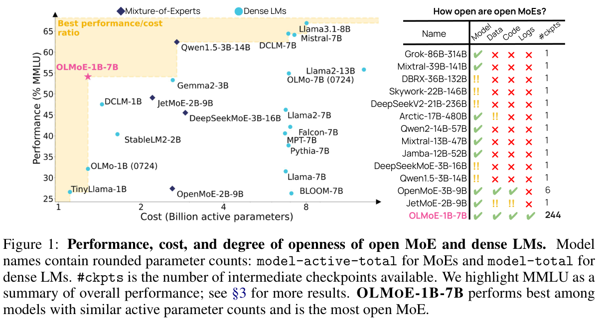
1 本文描述 09/2024 的初代 OLMoE。更新版本的概览见附录 I。
LLM 虽然在多种任务上取得显著进展，但训练与推理中的性能和成本之间，仍存在明显权衡。高性能语言模型的构建与部署成本过高，使许多学术研究者和开源开发者无法使用它们2。改善成本–性能权衡的一种方法，是采用稀疏激活的 MoE[154]。MoE 的每层包含多个专家，但每次只激活其中一部分，见图 2。这使 MoE 比总参数量相近、每个输入都激活全部参数的稠密模型高效得多 [205]。因此，业界前沿模型采用了 MoE，包括 Gemini-1.5 [175]，以及据报道采用这一架构的 GPT-4 [29]。
然而，大多数 MoE 模型是闭源的。虽然有些公开了模型权重 [43, 79, 158, 178, 180]，但对训练数据、代码或配方的信息披露很少甚至没有，见图 1。此前虽有致力于使语言建模研究完全可获取的工作 [18, 65, 90, 103, 193, 209]，但它们大多限于稠密语言模型。实际上，MoE 更需要开放，因为它们给语言模型增加了复杂的新设计问题，例如应使用多少总参数与激活参数、应采用大量小专家还是少量大专家、是否共享专家，以及采用何种路由算法。缺少关于这些细节的开放资源与研究发现，阻碍了本领域构建成本高效、能力接近闭源前沿模型的开放 MoE。
为解决这些问题，我们介绍 OLMoE：一个完全开放的 MoE 语言模型，在相近规模模型中达到先进性能。具体而言，我们对 OLMoE-1B-7B 预训练 5.1 万亿 tokens，总参数量为 6.9B，每个输入 token 只激活其中 1.3B。这使其推理成本与 OLMo 1B [65] 或 TinyLlama 1B [210] 等约 1B 参数的稠密模型相近，但需要更多 GPU 显存存储全部 7B 参数。实验表明，MoE 的训练速度比激活参数量相当的稠密语言模型快约 2 倍。图 1 显示，OLMoE-1B-7B 显著优于所有开放 1B 模型，并可与推理成本和存储需求明显更高的稠密模型竞争，例如与成本约高 10 倍的 Llama2-13B 具有相近的 MMLU 分数。通过指令与偏好微调，我们得到 OLMoE-1B-7B-Instruct，发现它在 MMLU、GSM8k、HumanEval 等常用基准上，超过 Llama2-13B-Chat [183]、OLMo-7B-Instruct（0724）和 DeepSeekMoE-16B [42] 等多个更大的指令模型。
我们开展的全面受控实验，揭示了 MoE 的关键设计选择（见表 1）及一般语言模型的设计选择。使 MoE 获得良好性能的一项关键设计，是使用具有细粒度专家的细粒度路由 [42]：每层采用 64 个小专家，激活其中 8 个。路由算法的选择也很重要：我们发现，不丢弃 token 的 dropless [58]、基于 token 的路由 [154]，优于基于专家的路由 [219]。我们还发现了挑战此前工作的结果，例如共享专家无效 [42]，以及除非计算预算较小，否则将预训练稠密语言模型稀疏升级为 MoE [85] 的收益有限。最后，我们分析 OLMoE-1B-7B 的路由行为，发现路由在预训练早期就趋于饱和，专家很少共同激活，并表现出领域和词汇专门化。
我们希望这一完全开放的 MoE 促进更多研究与分析，改善对这些模型的理解。我们以开源许可发布训练代码、中间 checkpoint（每 5000 步一次）、训练日志和训练数据：Apache 2.0（http://www.apache.org/licenses/LICENSE-2.0）或 ODC-By 1.0（https://opendatacommons.org/licenses/by/1-0/）。
OLMoE 是仅解码器语言模型，包含 \(N_{L}\) 个 Transformer [185] 层。OLMo [65] 等稠密模型中的 FFN，被一个 MoE 模块替代；该模块包含 \(N_{E}\) 个较小的 FFN，称为专家，每个输入 token 会激活其中 \(k\) 个专家，〔接第 5 页；第 4 页为架构图与设计表〕
2 例如，即使使用 16 张 H100 GPU 并进行多种优化，Llama 3 405B 的 decoding 吞吐量也只有约每秒 100 tokens [50]。
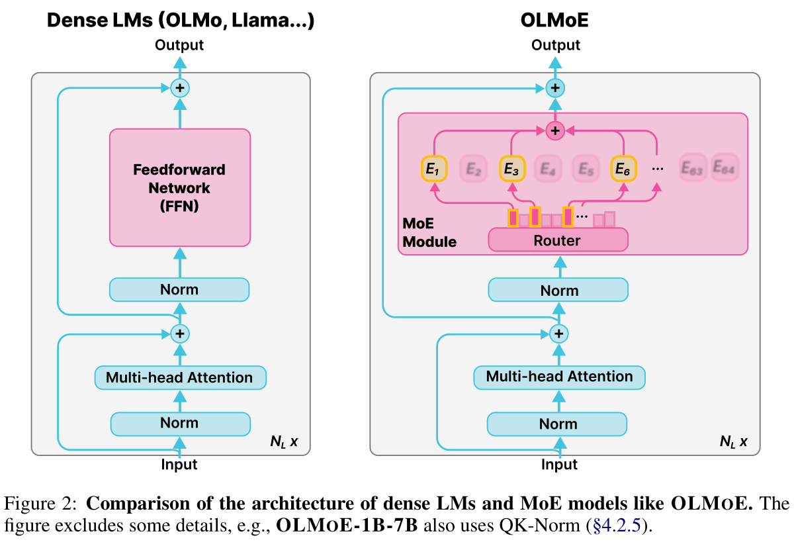
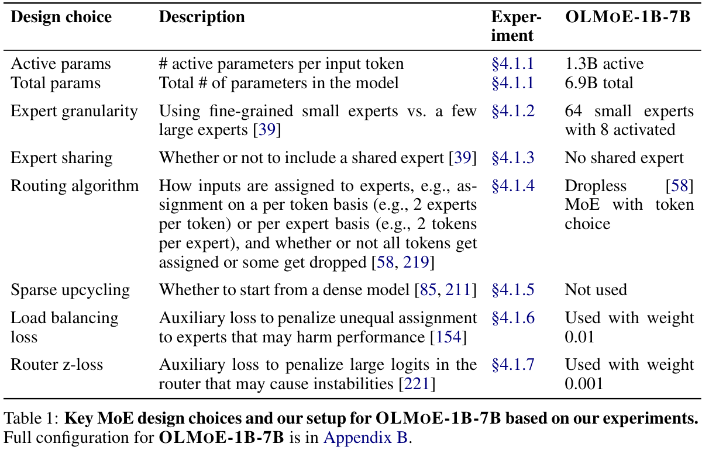
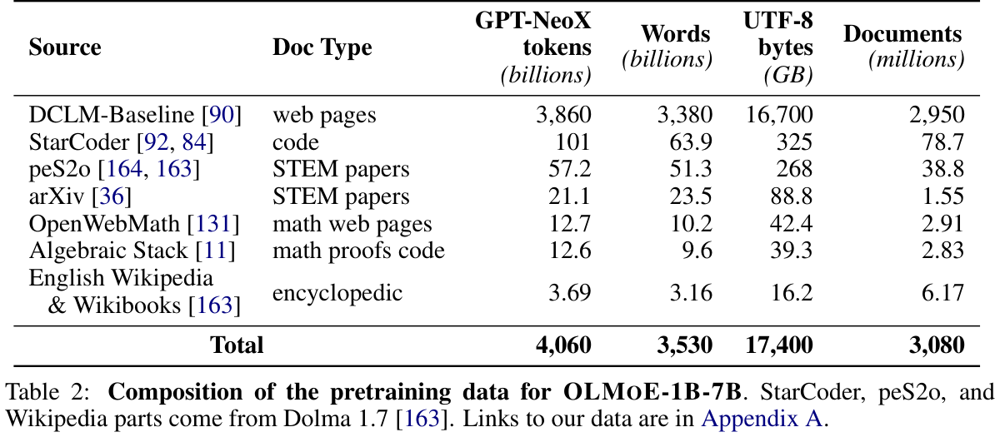
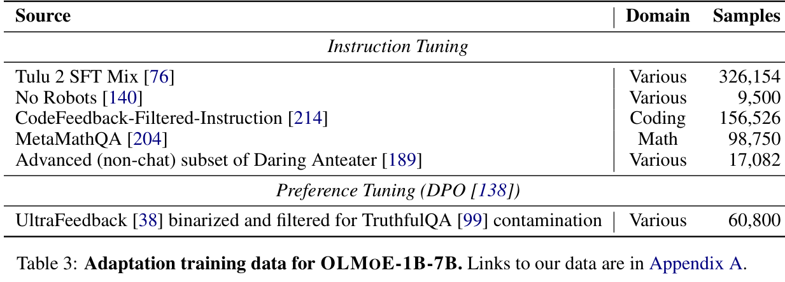
〔接第 3 页的架构说明〕对于每个处理的输入 token \(x\)，激活这些专家，亦见图 2：
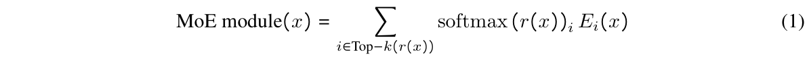
其中，\(r\) 称为路由器，是一个可学习线性层，将输入 logits 映射到选中的 \(k\) 个专家。对路由器输出应用 softmax，计算全部 \(N_{E}\) 个专家的路由概率。每个选中的专家 \(E_{i}\) 处理输入 \(x\)，并将其输出乘以相应路由概率。随后，对所有选中的 Top-k 专家的结果求和，得到 MoE 模块在该层的输出；模型总共有 \(N_{L}\) 层。设计 MoE 的关键决策包括：确定激活参数量与总参数量、专家设计，例如粒度以及是否加入共享专家，以及选择路由算法。此外，训练 MoE 可能涉及从稠密模型初始化（sparse upcycling），以及改变训练目标，例如加入辅助负载均衡损失和路由器 z-loss。这些设计选择的实验见第 4.1 节；表 1 展示了最终决策。
总体而言，我们使用总计 6.9B 参数中的 1.3B 激活参数，每层 64 个专家中激活 8 个。我们使用不丢弃 token 的 token 选择路由 [58]：对于每个输入 token，可学习的路由网络决定由哪 8 个专家处理。OLMoE-1B-7B 从头训练，使用两个辅助损失：负载均衡损失（\(L_{\mathrm{LB}}\)）[154] 与路由器 z-loss（\(L_{\mathrm{RZ}}\)）[221]，分别在第 4.1.6 和 4.1.7 节定义并实验。将它们分别乘以损失权重 \(\alpha\) 和 \(\beta\)，再与交叉熵损失（\(L_{\mathrm{CE}}\)）线性相加，得到最终训练损失：
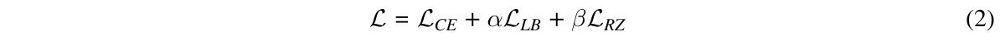
OLMoE-1B-7B 的完整预训练配置见附录 B。
预训练数据。我们混合来自 DCLM [90] 和 Dolma 1.7 [163] 的数据，包括：(1) Common Crawl 中经过质量过滤的子集，称为 DCLM-Baseline；(2) DCLM 和 Dolma 1.7 均使用的 StarCoder、Algebraic Stack 和 arXiv；以及 (3) Dolma 1.7 中的 peS2o 和 Wikipedia。我们将预训练数据集称为 OLMOE-MIX。
对上述所有来源，我们都应用一个过滤器，删除包含连续重复 32 次或更多次的 n-gram 的所有文档，其中 n-gram 是任意长度为 1 至 13 个 token 的片段。对于 StarCoder 子集，我们还会删除以下文档：来自 GitHub 上少于 2 个 star 的仓库的文档，最常出现的词占文档超过 30% 的文档，或最常出现的两个词合计占文档超过 50% 的文档。
我们在每个 epoch 开始时随机打乱所有样本，总共训练 5.133T token（按照 Muennighoff 等人 [121] 的做法，训练 1.3 个 epoch）。在退火阶段（最后 100B token），我们先重新打乱整个数据集，再按照先前工作 [65, 90] 将学习率线性衰减至 0。预训练数据统计见表 2。
适配。我们遵循标准适配流程创建 OLMOE-1B-7B-INSTRUCT：先进行指令微调 [118, 190, 149, 156, 206]，再进行偏好微调 [31, 15, 138, 54]，以先前的开放模型 [184, 76, 188] 为基础。我们在指令微调数据集中加入更多代码和数学数据，以提升下游代码和数学应用的表现。GPT-4 [128] 和 Llama 3 [50] 等其他模型也会在预训练中纳入 GSM8k [35] 或 MATH [71] 等数学数据集中的样本。我们还纳入 No Robots 和 Daring Anteater 的一个子集，因为它们质量高，并能增加多样性；这两个因素是成功适配的关键 [188, 216, 104, 120]。适配数据集见表 3，超参数见附录 B。
我们的评测流程分为三个部分：预训练期间、预训练之后和适配之后。各部分的设置详见附录 C。
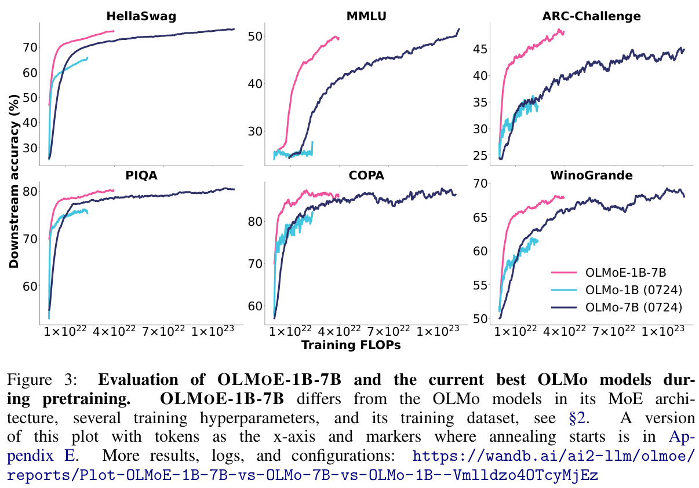
预训练期间。在图 3 中，我们在常用下游任务上，将预训练期间的 OLMOE-1B-7B 表现与当前表现最好的 OLMo 模型 [65] 进行比较。我们发现，
（句子接下一页。）
（接上一页。）
在所有任务上，OLMOE-1B-7B 都能以少于稠密 OLMo 模型的计算量（FLOPs）取得更好的表现。在训练结束时，OLMOE-1B-7B 的表现与 OLMo-7B 持平或更好，尽管其训练所用的 FLOPs 不到后者的一半，而且仅有 1B 激活参数。这很可能源于我们对 OLMo 设置所作的数据集与建模改动，包括与 MoE 有关的改动，以及附录 B 概述的稳定性和性能改进。附录 E 给出了训练损失和验证损失曲线，显示在 5T token 的预训练期间，损失曲线十分平滑，没有显著的 loss spike。
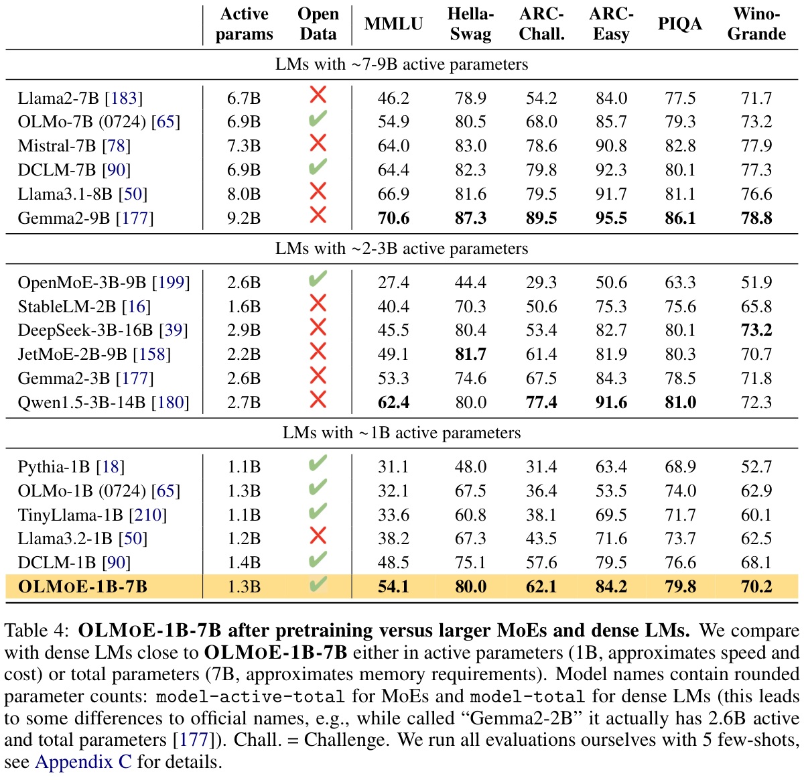
预训练之后。在表 4 中，我们在常见下游任务上评测 OLMOE-1B-7B。我们发现，OLMOE-1B-7B 在使用少于 2B 激活参数的模型中表现最好，使其成为许多语言模型使用场景中最经济的选择。对于更高的预算，Qwen1.5-3B-14B 表现更强，但其激活参数和总参数都超过 OLMOE-1B-7B 的两倍。我们发现，尽管每次前向传播所需计算量约少 6–7 倍，OLMOE-1B-7B 的表现仍超过 Llama2-7B [183] 等一些拥有 7B 参数的稠密语言模型，但不及 Llama3.1-8B [50] 等其他模型。图 1 将 OLMOE-1B-7B 和其他语言模型的 MMLU 表现与激活参数量进行对比；激活参数量可近似衡量给定成本下模型的价值。OLMOE-1B-7B 在其成本区间内达到当前最佳水平。
适配之后。在表 5 中，我们评测 OLMOE-1B-7B 的 SFT 和偏好微调（DPO）。SFT 提升了模型在所有被测任务上的表现。我们在 GSM8k 上观察到超过 10 倍的提升，这很可能是因为我们加入了额外数学数据，以弥补预训练期间数学数据量相对较少的问题（§2）。DPO 对大多数任务都有帮助，尤其是在 AlpacaEval
（句子接下一页。）
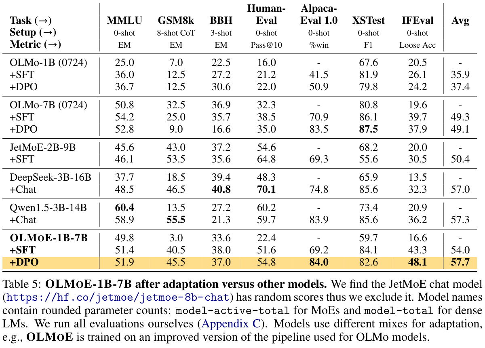
（接上一页。）
上，这与先前工作 [188, 76, 122] 的发现一致。我们的 DPO 模型称为 OLMOE-1B-7B-INSTRUCT，在所有被评测模型中取得最高平均分。我们发现，它优于 Qwen1.5-3B-14B 的 chat 版本，尽管 Qwen 的参数量超过其两倍，而且 Qwen 的预训练模型在表 4 中优于 OLMOE-1B-7B。AlpacaEval 上 84% 的得分还超过了排行榜3中大得多的稠密模型，例如 Llama2-13B-Chat [183]。
本节介绍促成 OLMOE-1B-7B 的预训练与适配实验。我们将其分为 MoE 专用设置的实验（§4.1）、同时适用于稠密语言模型和 MoE 的设置实验（§4.2），以及适配实验（§4.3）。在预训练实验中，我们经常使用 MMLU Var，即 MMLU [70] 的一个版本，它采用数量不同的少样本示例和不同格式，能够在训练早期提供信号。完整评测设置见附录 C，额外实验见附录 F。每项实验都链接到一份 Weights & Biases 报告，其中提供更多验证与下游结果，以及各次运行的完整配置。为隔离改动的影响并尽量减少混杂因素，我们在每项实验中只改变一个超参数。不过，由于超参数众多，某些结果可能会在不同配置下改变，我们无法保证每项超参数选择都正确。不同实验之间的模型不可直接比较，因为我们会修改基础模型以纳入有效的发现。
先前工作报告了 MoE 相比稠密模型的不同加速幅度：Artetxe 等人 [10] 报告，MoE 只需少 2–4 倍的计算量即可达到稠密模型的表现；MoMa [100] 在语言任务上节省 2.6 倍的 FLOPs；Arctic [161] 节省 4 倍的 FLOPs，但使用的稠密模型与 MoE 配置差异很大，
（句子接下一页。）
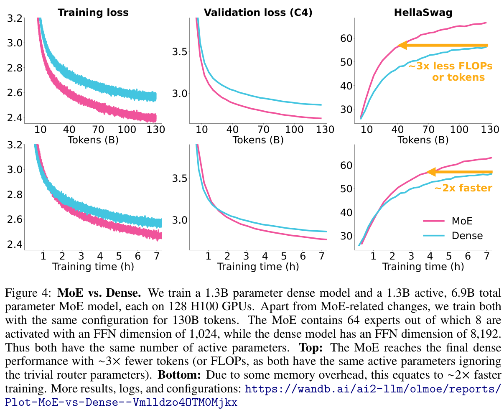
（接上一页。）
而 Switch Transformers [56] 使用 MoE 后训练加快 2–7 倍，不过它研究的是编码器—解码器模型，其他工作研究的则是仅解码器语言模型 [137]。
在图 4 中，我们在受控设置下比较 MoE 和稠密模型。我们发现，MoE 只需少约 3 倍的 token 即可达到稠密模型的表现，相当于以 FLOPs 衡量的计算量少约 3 倍。然而，训练总参数量为 7B 的 MoE 带来的额外内存开销，使其每秒处理的 token 少于稠密模型（MoE 每 GPU 每秒 23,600 token，稠密模型为 37,500 token）。因此，从训练时间来看，它达到稠密模型表现的速度仅快约 2 倍。可能还存在一些优化，使加速幅度更接近 token 数量上的 3 倍加速，我们留待未来工作。根据这些结果，我们选择总参数量为 6.9B、激活参数量为 1.3B 的 MoE 配置，分别在总参数量和激活参数量上与 OLMo-7B 和 OLMo-1B 匹配。
Dai 等人 [39] 提议使用小型细粒度专家，以允许更多专家组合，从而提高模型的灵活性。例如，Mixtral 模型 [79] 使用每层 8 个专家、激活其中 2 个的常见配置，每层允许 \(\binom{8}{2}=28\) 种组合。将每个专家的大小减半，并相应将专家数量加倍以维持相同的计算量与参数预算，就能将可能的组合数增加至 \(\binom{16}{4}=1{,}820\)。Krajewski 等人 [86] 研究了计算最优的粒度配置，发现更高的计算预算适合更细粒度的专家。
在图 5 中，我们观察到，更细粒度的专家改善了训练损失、验证损失和下游表现。8 个专家的配置使用 1 个激活专家，产生 \(\binom{8}{1}=8\) 种组合。将每个专家的大小缩小为四分之一，同时将专家数量增加至 32 个并激活其中 4 个（\(\binom{32}{4}=35{,}960\) 种组合），我们观察到 HellaSwag 上约 10% 的提升
（句子接下一页。）
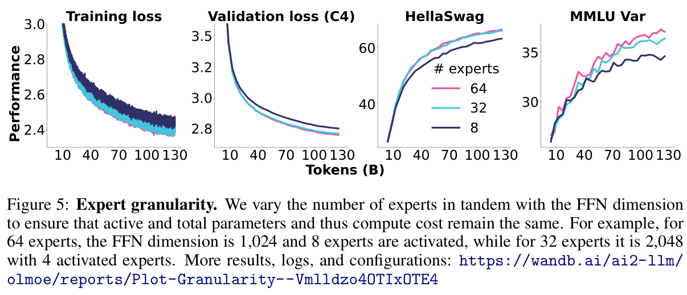
（接上一页。）
和 MMLU 上，这一提升发生在训练至约 1300 亿 token 时。不过，我们发现，粒度的收益会递减。进一步增加至 64 个专家、激活其中 8 个（\(\binom{64}{8}=4{,}426{,}165{,}368\) 种组合），下游指标的提升幅度更小，仅为 1–2%。对于 OLMOE-1B-7B 的 \(3 \times 10^{22}\) 计算预算4，Krajewski 等人 [86] 预测最优专家数量为 256（其论文中的 \(G=32\)）。然而，他们的预测针对计算最优模型 [72, 32]，而我们训练 5T token，比按传统标准对我们这种模型规模认为最优的 token 数量高出数个数量级。因此，他们的预测可能不适用于我们的设置；也考虑到图 5 中的收益递减，我们为 OLMOE-1B-7B 保留 64 个专家。
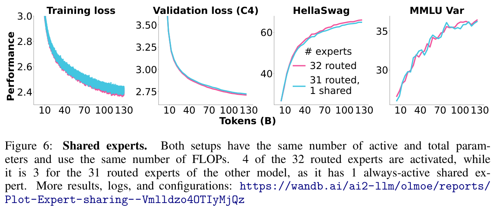
Dai 等人 [39] 提议在路由专家之外，使用一个始终被调用的共享／固定专家进行训练。其直觉是鼓励共享专家学习共同信息，让其他路由专家学习更专门的知识。这应当减少专家之间的冗余，从而得到更好的模型，因为它能存储更多总信息。
在图 6 中，我们比较一个共享专家加一个路由专家与两个路由专家的设置。虽然两种设置的表现相近，但共享一个专家的表现略差。共享专家减少了模型的灵活性，因此与 §4.1.2 的发现相悖：该节表明，允许更多专家组合能够改善性能。具体来说，图 6 中两个模型每层分别有 \(\binom{32}{4}=35{,}960\) 和 \(\binom{31}{3}=4{,}495\) 种可能组合。因此，将一个路由专家移除并改为共享专家，会消除近 90% 的可能
（句子接下一页；本段关于“一个／两个”专家的表述按原文保留，图 6 的具体配置见原图。）
4 使用 \(6\ast N\ast D\) [80] 近似，其中 \(N\) 为激活参数量（1B），\(D\) 为训练 token 数量（5T）。
（接上一页。）
组合。这很可能抵消了将共同知识隔离在共享专家中的潜在收益。根据这些结果，我们在 OLMOE-1B-7B 中不使用共享专家，但我们确实认为，更频繁激活、甚至始终激活某些专家的想法有其价值。不过，我们认为，这种行为应由模型学习，而不是通过共享专家强制规定。在当前设置下，这很难实现，因为需要负载均衡损失（§4.1.6），当 token 未在专家之间均匀分配时，它会惩罚模型。未来工作可以探索移除负载均衡损失，以允许更灵活地使用专家。
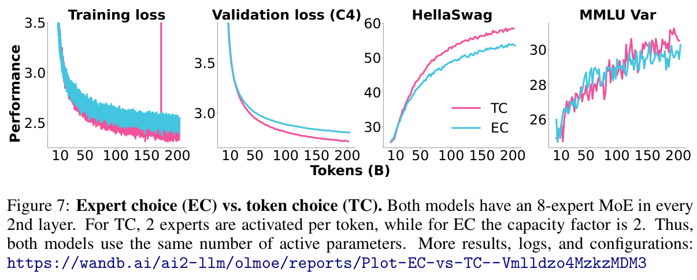
MoE 路由器决定哪些专家处理每个输入 token（§2）。常见类型有两种 [102]：专家选择（EC）[219] 和 token 选择（TC）[154]。对于 EC，每个专家从输入序列中选择固定数量的 token。按其设计，每个专家会处理相同数量的 token。这是 EC 的主要优势，因为它确保完美的负载均衡，提高训练吞吐量，并免去了负载均衡损失。EC 的主要缺点是难以用于自回归生成；在这种生成中，每一步处理单个 token，而不是一次处理整个序列 [143]。另一个潜在缺点是，EC 可能导致 token 丢弃，即某些 token 未被任何专家选中，这可能损害性能 [58]。与此同时，它也可能让某些 token 被多个专家处理，这也可能有益，因为模型可以为某些 token 分配更多计算量 [219]。对于 TC，每个 token 选择固定数量的专家。这可能导致许多 token 选择同一专家，损害训练效率。因此，通常会将 TC 与负载均衡损失 [154] 结合使用，以鼓励均匀分配。
在图 7 中，我们比较 EC 和 TC。我们发现，在相同 token 预算下，TC 在图示的所有任务以及 PIQA、SciQ 等其他任务上均优于 EC；其他任务的结果见 https://wandb.ai/ai2-llm/olmoe/reports/Plot-EC-vs-TC--Vmlldzo4MzkzMDM3。虽然 Zhou 等人 [219] 发现 EC 更好，但我们的配置略有不同：我们使用不丢弃 token 的 MoE [58]，并配合负载均衡损失。因此，我们的 TC 变体预期会优于 Zhou 等人 [219] 的 TC 变体。我们确认了 EC 运行速度快约 20% 的发现：EC 每设备每秒处理 29,400 token，TC 则为 24,400 token [219]。EC 在多模态设置 [100] 中可能更有益，因为丢弃含噪图像 token 的危害可能小于丢弃文本 token。因此，虽然这次 OLMOE 发布采用 TC，但我们可能在未来多模态模型中重新考虑 EC。
Komatsuzaki 等人 [85] 提议通过 sparse upcycling 将稠密模型转换为 MoE 模型：(1) 为每个所需专家克隆稠密 MLP，组成 MoE 层；(2) 在每个 MoE 层之前加入新初始化的路由器；(3) 使用新模型继续预训练，让克隆的 MLP 逐渐在不同方面形成专门化，并学习路由器。他们发现，在计算预算达到用于 sparse upcycling 的原始稠密 checkpoint 计算预算的 120% 之前，这种方法始终比从头训练的语言模型具有性能优势。例如，如果对一个 1.3B 参数模型进行 sparse upcycling，
（句子接下一页。）
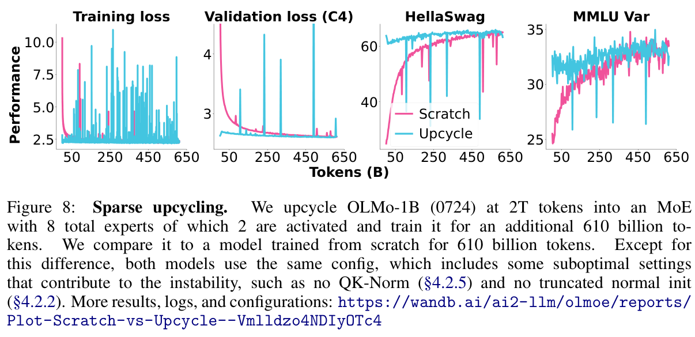
（接上一页。）
该模型已训练 2 万亿 token，那么从头训练的 MoE 应当只有在训练到 2.4 万亿 token 时才追上升级再利用的模型。也就是说，sparse upcycling 的模型会再训练 4000 亿 token，从而节省相当于至多 2T token 的计算量。MiniCPM [74]、Qwen2 [201] 以及据报道的 Mixtral [25, 79] 等其他工作采用了 sparse upcycling，但只分享了有限的配置信息。
在图 8 中，我们比较对 OLMo-1B (0724) [65] 进行 sparse upcycling 与从头训练 MoE。我们发现，在 500B token 之后，一个其他方面等价、从头训练的 MoE 就已追上升级再利用的模型；这一点既体现在图 8 的指标中，也体现在 https://wandb.ai/ai2-llm/olmoe/reports/Plot-Scratch-vs-Upcycle--Vmlldzo4NDIyOTc4 所示的额外指标中。训练到约 600B token 时，从头训练的 MoE 开始超过升级再利用的 MoE。因此，它只需原始稠密模型计算预算的 25% 就能追上，而非 Komatsuzaki 等人 [85] 报告的 120%。不过，他们使用专家选择路由，研究编码器—解码器模型 [139]；我们则使用 token 选择路由（§4.1.4）和仅解码器模型（§2）。此外，我们升级再利用的模型已经明显过度训练 [57]，即一个训练了 2T token 的 1B 模型。对于稠密模型来说，其参数很可能已处于十分优化的区域，可能限制升级再利用后能够进行的额外探索。这促使我们尝试向升级再利用的权重加入噪声，详见附录 F，但我们未发现这带来更好的表现。升级再利用的一个很大缺点是，所得 MoE 受到稠密模型某些超参数的限制。具体来说，OLMo-1B (0724) 训练时没有使用 QK-Norm 和正态初始化，而我们实验发现，这两点都会损害稳定性（§4.2.5、§4.2.2）。虽然可能可以直接加入新的 QK-Norm，并像从头训练新路由器层那样从头训练这些归一化层，但在升级再利用时，无法改变原始稠密模型的初始化。因此，我们既希望改变这些超参数，又要让 OLMOE-1B-7B 训练至约为稠密模型计算预算的 250%（5T 对比 2T token），所以不采用升级再利用。
Shazeer 等人 [154] 提出负载均衡损失，当模型不均衡时——即将所有 token 路由到仅少数专家——对模型施加惩罚。其依据是，没有此类惩罚时，模型往往只更新每层中少数选定的专家 [52, 17]。为计算负载均衡损失（\(L_{\mathrm{LB}}\)），我们将路由到某个专家 \(E_{i}\) 的 token 比例 \(f_{i}\)，与一个 batch 中分配给 \(E_{i}\) 的总路由概率 \(P_{i}\) 相乘，并对 \(N_{E}\) 个专家求和：
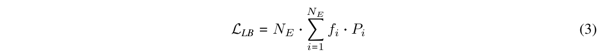
损失还通过 \(N_{E}\) 和损失权重 \(\alpha\)（见公式 2）缩放，其中 \(\alpha\) 是决定损失大小的可选权重，通常设为 0.01 [221, 199]。我们没有尝试改变 0.01 这一权重。
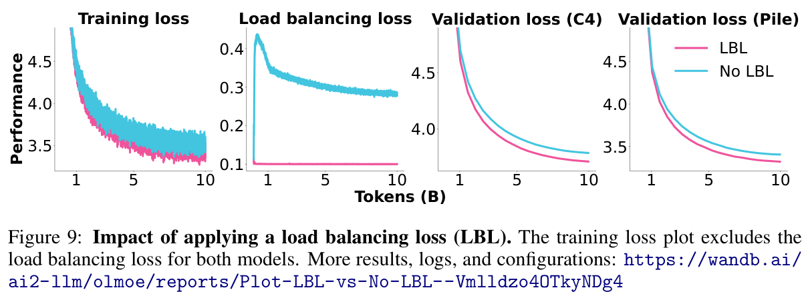
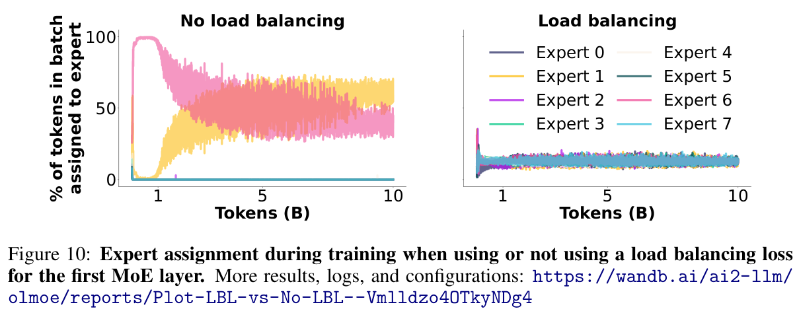
在图 9 中，我们研究辅助负载均衡损失对性能的影响。我们发现，从训练损失和验证损失来看，即使仅训练数十亿 token，使用负载均衡损失也能带来更好的表现。即使不使用它（“No LBL”），我们仍会测量负载均衡损失，并发现该损失虽然最初出现尖峰，却在随后的数十亿 token 中缓慢下降。图 10（左）也显示了这一行为：最初第一层的所有 token 都被分配给第 6 个专家（粉色）。最终，模型也开始将一些 token 分配给第 1 个专家（黄色）。然而，其他所有专家的曲线基本保持平坦，因此它们成为占用 GPU 内存却不被使用的“死权重”。根据这些结果，我们遵循先前工作 [154, 158]，使用权重为 0.01 的辅助负载均衡损失。不过，摆脱负载均衡损失是未来研究的重要方向，因为它强制模型近乎均等地使用所有专家，限制了模型的灵活性。这可能妨碍专家在某些数据领域形成专门化，也可能是先前工作未能找到专家专门化的有力证据的原因 [79, 221]。
Zoph 等人 [221] 提出路由器 z-loss，以同时改善 MoE 模型的稳定性和质量。这种辅助损失惩罚进入门控网络的较大 logits。这样的较大 logits 可能在 MoE 层的大规模矩阵乘法中导致数值溢出。计算时，对路由器层之前的 logits \(x_j\) 取指数，在 \(N_{E}\) 个专家上求和，再在 batch \(B\) 上取平均，从而使较大的 logits 产生较大的损失：
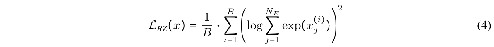
损失还乘以可选损失权重 \(\beta\)（见公式 2），以决定损失大小；该权重通常设为 0.001 [221, 158]。我们没有尝试改变 0.001 这一权重。
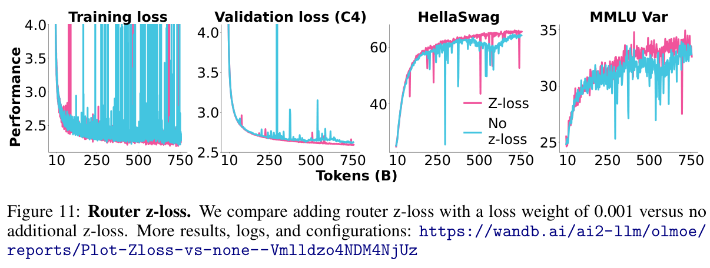
在图 11 中，我们确认，从训练损失、验证损失和下游表现来看，加入路由器 z-loss 能改善稳定性（尖峰更少）和质量（损失更低、下游表现更好）。因此，尽管它使吞吐量降低约 2%，我们仍按照 Zoph 等人 [221] 的做法，为 OLMOE-1B-7B 使用权重为 0.001 的路由器 z-loss。
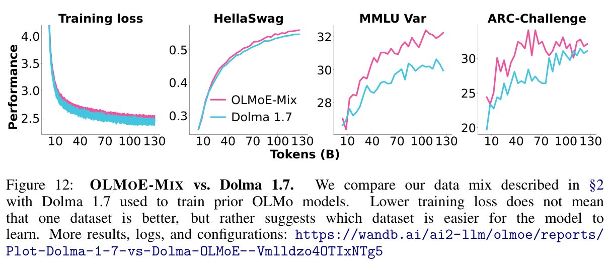
Li 等人 [90] 发布 DCLM-Baseline 数据集，并证明，以 MMLU [70] 等常见基准衡量，它能得到比 Dolma 1.7 和其他数据集更好的语言模型。这促使我们将其 DCLM 数据集与 Dolma 1.7 中一些我们认为质量较高的组成部分混合，见 §2。在图 12 中，我们在受控设置下比较这一混合数据集 OLMOE-MIX 与 Dolma 1.7。我们发现，OLMOE-MIX 在三项下游指标上都带来明显提升，尤其是 MMLU。DCLM-Baseline 是通过一系列针对 MMLU 和其他下游指标的数据集消融实验创建的，这解释了上述结果。我们还比较了向混合数据中加入 Reddit 和 FLAN 的效果，详见附录 F，但没有发现一致的性能提升。对于加入这些数据集为何没有帮助，我们没有很强的直觉；在未来迭代中，采用更自动化的数据集混合方法可能更合适 [101, 4]。我们使用 DCLM-Baseline 与 Dolma 1.7 的混合数据进行预训练，并将其称为 OLMOE-MIX。
先前关于 MoE 的工作很少分享初始化策略。即使在本工作之前最开放的 MoE——JetMoE [158] 和 OpenMoE [199]——也没有提及初始化方案。对于 DeepSeekMoE [39] 和 DeepSeekV2 [43]，作者分享了他们使用正态初始化，
（句子接下一页。）
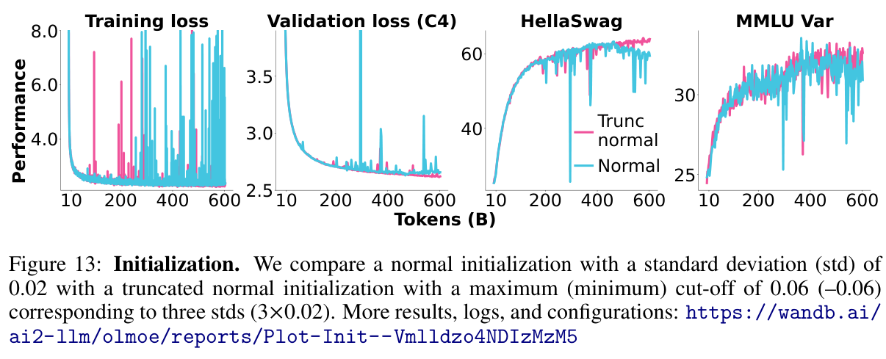
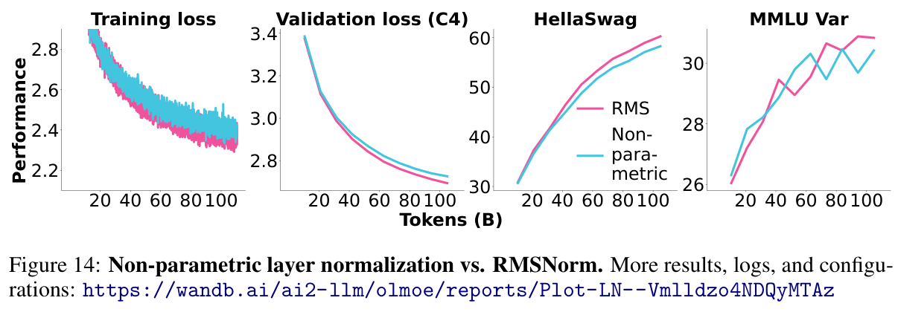
（接上一页。）
标准差（std）为 0.006。对于稠密语言模型，标准差为 0.02 的正态初始化已被广泛使用，这一做法由 Shoeybi 等人 [159] 推广。
在图 13 中，我们发现，截断正态初始化相比普通正态初始化，能带来更稳定的训练和更好的表现。两种初始化的差别只在约 4500 亿 token 时才变得明显，此时采用正态初始化的模型开始发散。尽管除了权重初始化不同之外，两个模型使用相同配置，仍出现了这一差异。必须训练数千亿 token 才能从实验中获得明确信号，是预训练消融实验的主要挑战之一。我们为 OLMOE-1B-7B 使用截断正态初始化。
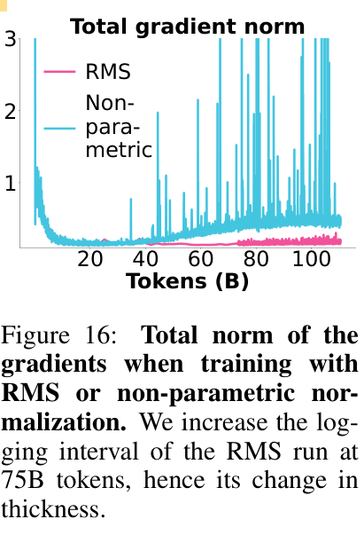
OLMo [65] 使用无参数层归一化 [12]，主要因为它比常用的 RMSNorm [208, 113] 快得多。这一选择并不常见，因为大多数语言模型使用 RMSNorm，例如 Llama [182, 183, 50]、Gemma [176, 177] 和 Qwen [13, 201] 模型系列。
在图 14 中，我们观察到，将 OLMo 的无参数层归一化替换为带参数的 RMSNorm，可以带来更好的表现。这很可能是因为，无参数层归一化导致大量 gradient 尖峰，如图 16 所示。我们将 gradient 裁剪阈值设为 1.0，避免这些尖峰造成非常大、可能扰乱训练的参数更新。然而，被裁剪的 gradient 仍可能损害模型性能，因为它们已不再是真实 gradient。因此，尽管 RMSNorm 使训练吞吐量降低 15%，我们仍使用 RMSNorm 训练最终模型。我们研究
（句子接下一页。）
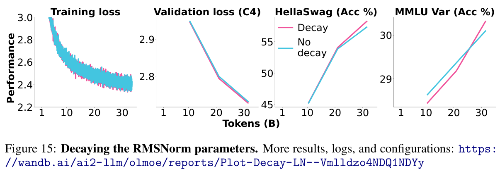
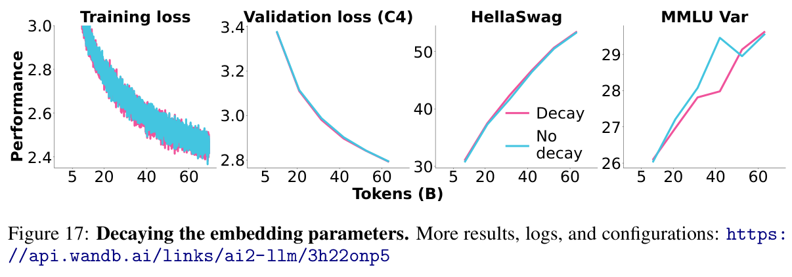
（接上一页。）
并将 RMSNorm 参数纳入权重衰减，因为我们发现，这样的表现略好（图 15），尽管通常的做法是将它们排除在外。5
与 RMSNorm 参数（§4.2.3）类似，embedding 参数通常也被排除在权重衰减之外。6在图 17 中，我们发现，是否对这些参数进行衰减仅对性能产生轻微影响，进行衰减略好。因此，为简单起见，我们对 OLMOE-1B-7B 的所有参数进行权重衰减，包括 embedding 与 RMSNorm 参数。
一些工作报告，在 query 和 key 投影之后加入层归一化（“QK-Norm”）能提高稳定性 [173, 113, 44]。QK-Norm 能避免后续 attention 操作产生过大的 logits，后者可能导致数值溢出并使网络不稳定，尤其是在低精度训练时。与模型其他位置的层归一化一样，QK-Norm 可以采用无参数形式，也可以使用带参数的 RMSNorm（§4.2.3）。
在图 18 中，我们比较使用 QK-Norm 与在 query 和 key 投影后不使用归一化。我们发现，QK-Norm 带来一些稳定性和性能改进。该实验使用 OLMo [65] 所用的无参数层归一化，而 OLMOE-1B-7B 使用带参数的 RMS 层归一化 [208]（§4.2.3）。为确保 QK-Norm 的收益不是与无参数层归一化比较产生的假象，我们又使用 RMS 层归一化进行实验，仍发现 QK-Norm 使训练损失略低，并避免了一次很大的 gradient 范数尖峰。7因此，尽管 QK-Norm 使吞吐量降低近 10%，我们仍为 OLMOE-1B-7B 使用它。
5 https://github.com/karpathy/minGPT/pull/24#issuecomment-679316025
6 https://github.com/karpathy/minGPT/pull/24#issuecomment-679316025
7 https://wandb.ai/ai2-llm/olmoe/reports/Plot-QKNorm-revisited--Vmlldzo4NTc2NTIz
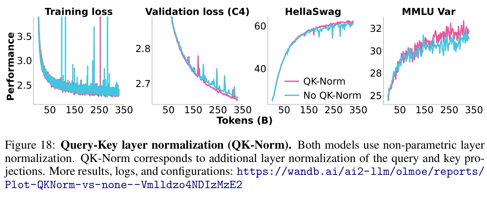
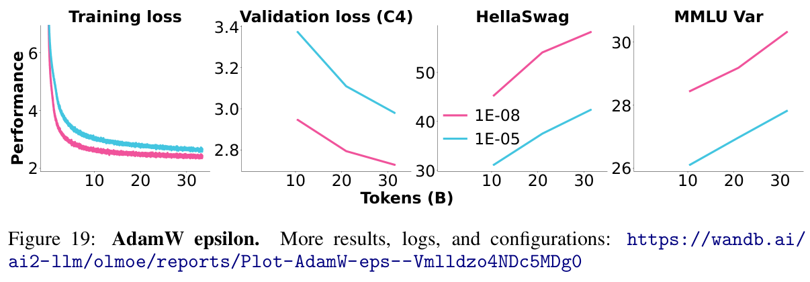
Groeneveld 等人 [65] 在训练 OLMo 时，为 AdamW 优化器使用 1E-05 的 epsilon（“eps”）值。更大的 eps 值会使优化器步长更小，但可能更稳定 [83]。
在图 19 中，我们发现，将 eps 降至推荐的默认值 1E-08 [83]，能显著提升性能，且该次运行仍保持稳定。因此，我们在最终运行中将 eps 设为 1E-08。
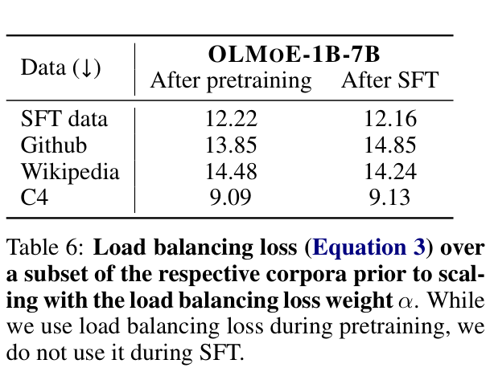
我们使用附录 C 描述的评测设置，对适配中的一些小设计选择进行实验。(1) 辅助损失：Zoph 等人 [221] 发现，在常规微调期间使用辅助负载均衡损失（§4.1.6）能带来小幅性能提升。然而，对于指令微调，Shen 等人 [156] 没有找到支持使用负载均衡损失或路由器 z-loss 的确凿证据；性能差异很小，有的支持使用辅助损失，有的则相反。在表 7 中，我们展示适配期间使用负载均衡损失的实验，发现不使用它表现更好（SFT 后为 54.0 对比 52.8；偏好微调（DPO）后为 57.7 对比 57.1）。停用负载均衡损失的一个潜在问题是，可能破坏专家之间的均衡，将某些专家变成死权重，如 §4.1.6 的预训练观察所示。不过，当我们在表 6 中测量 SFT 数据（§2）上的负载均衡损失时，发现损失在 SFT 期间实际上略有下降（12.16 对比 12.22）。这
（句子接下一页。）
（接上一页。）
很可能是因为，某些 token 被路由到哪些专家，在预训练早期就已确定，正如我们在后面的分析部分（§5.1）发现的那样。我们还在附录 G（图 33）中可视化了预训练后模型，以及不使用负载均衡训练的 SFT 和 DPO 模型的专家激活模式，发现其分布基本不变。因此，考虑到不使用负载均衡进行适配的模型表现更好，而且我们发现它不会显著影响路由，我们在适配期间不使用负载均衡。(2) 退火 checkpoint：我们还尝试使用退火前的 checkpoint（§2）进行适配，发现退火后的 checkpoint 表现更好（SFT 后为 53.8 对比 54.0，DPO 后为 56.3 对比 57.7），因此使用退火后的 checkpoint。(3) 偏好算法：自 DPO[138] 发布以来，已有多种偏好算法被提出 [54, 73, 114]。我们尝试 KTO [54]，发现对于我们的设置（附录 B），其在表 7 中与 DPO 持平。虽然我们发布了两个模型，但最终 OLMOE-1B-7B-INSTRUCT 模型采用 DPO，因为它在 AlpacaEval 上得分更高，而该基准比我们其他基准受数据污染的可能性更小 [198]。
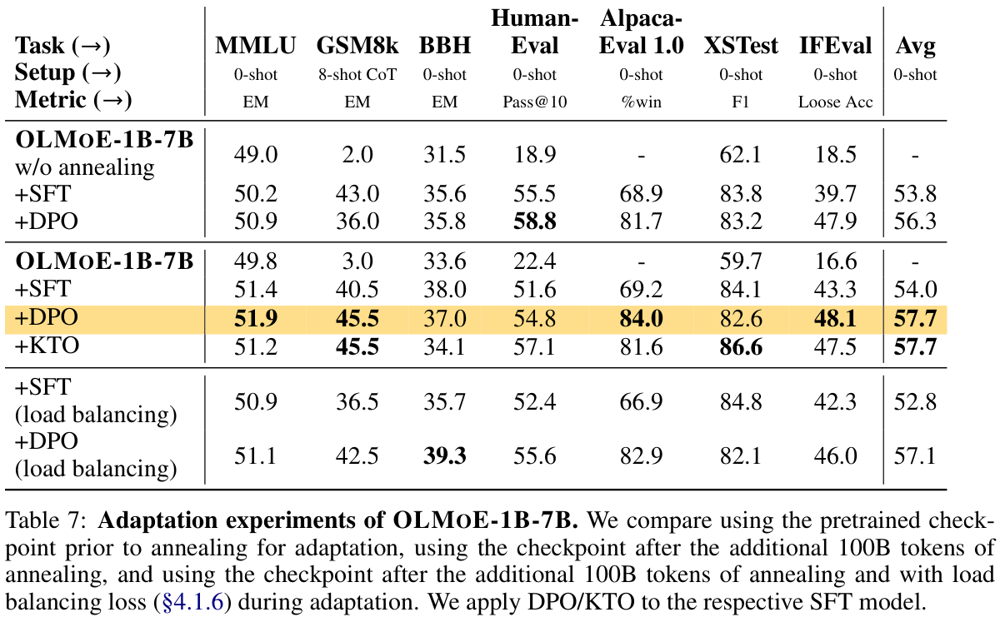
通过推进开放且成本高效的模型（§1），OLMOE-1B-7B 为语言模型和 MoE 的新研究提供了条件。利用我们发布的中间 checkpoint、数据与代码，我们定义并分析 MoE 特有的四项性质：路由器饱和度（§5.1）、专家共同激活（§5.2）、领域专门化（§5.3）和词表专门化（§5.4）。
我们将路由器饱和度定义为：在同一数据集上，时间 \(t\) 的某个中间 checkpoint 的专家激活中，与某个最终 checkpoint 所激活的专家 ID 相匹配的比例：
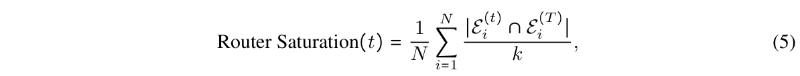
其中：
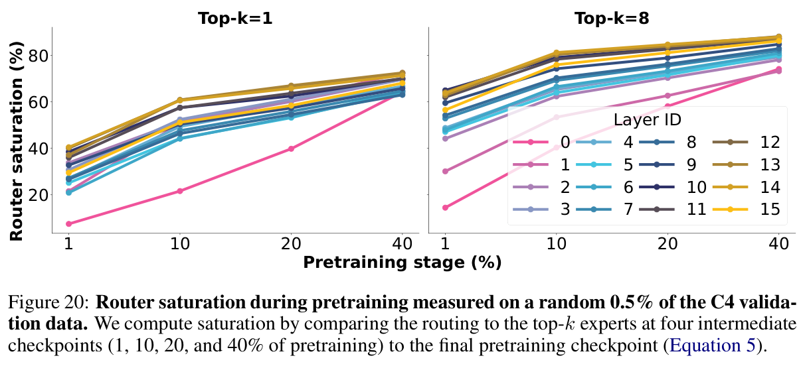
因此，路由器饱和度对应于路由器权重是否仍在学习由哪个专家处理某些数据。100% 表示，中间 checkpoint 的路由器会将数据路由到与最终 checkpoint 路由器相同的专家。不过，即使饱和度达到 100%，路由器权重仍能变化，并调整每个专家的精确路由概率。这些概率用于缩放模型中对应专家的输出。对于拥有 64 个专家的 OLMOE-1B-7B，随机路由对应的饱和度在 \(k=1\) 时为 \(1/64=1.6\%\)，在 \(k=8\) 时为 \(8/64=12.5\%\)。
在图 20 中，我们发现，预训练完成 1%（5000 步或 20B token）后，路由到 top-8 激活专家的决策已有至多约 60% 饱和（右图）。因此，对于给定输入数据，模型此时就已使用与预训练结束时相同的 8 个专家。这种早期饱和与先前工作 [199] 一致。预训练完成 40% 时，饱和度最高达到约 80%。不过，哪个 top-1 专家具有最高路由概率，饱和得更慢（左图）。我们发现，较后层的路由在预训练中更早饱和。第 0 层是例外，其饱和速度显著慢于其他层。Dai 等人 [39] 不在第一层使用 MoE，因为他们发现第一层的负载均衡收敛更慢。这很可能与我们关于饱和度的发现有关。由于第一层的路由饱和更慢，某些输入数据被路由到的专家经常变化。这些变化可能导致某个专家突然接收远多于其他专家的数据，从而破坏负载均衡。我们期待未来工作基于我们的开放发布，进一步研究第一层发生的情况。
我们将专家共同激活定义为：两个特定专家 \(E_{i}\) 和 \(E_{j}\) 同时被激活的次数，占其中一个专家总激活次数的比例：
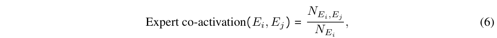
其中：
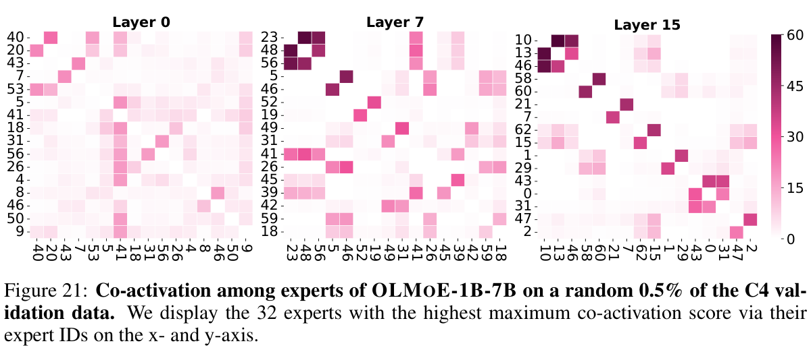
共同激活率为 100% 表示，只要 \(E_{i}\) 被激活，\(E_{j}\) 就总是同时被激活。0% 表示这两个专家从不共同出现。如果多对专家具有较高共同激活率，可能表明这些专家可以合并，保留为独立专家带来的收益较小。在分布式设置中，可以将高度共同激活的专家放在同一设备上，降低模型推理期间的通信成本。
在图 21 中，我们发现，除少数例外外，同一层内的专家之间不存在强共同激活。这可能说明不同专家之间的冗余较少。总体而言，第 7 层与第 15 层呈现相似的共同激活模式，有若干由 3 个或 2 个专家组成的组倾向于一起激活。我们在 §5.4 中研究激活这些专家的 token。此外，在附录 G（图 35）中，我们研究不同层之间，而非同一层内部的专家，是否倾向于共同处理 token。
我们将领域专门化定义为：来自某个特定领域 \(D\) 的 token，被路由到某个特定专家 \(E_{i}\) 的比例：
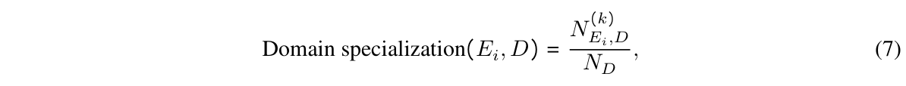
其中：
因此，领域专门化指专家 \(E_{i}\) 对领域 \(D\) 的专门化程度。100% 表示该领域的所有数据都被路由到 \(E_{i}\)，而 0% 表示该专家从不用于该领域，可以将其从模型中移除而不影响该领域的表现。
在图 22（上）中，我们发现许多专家在特定领域的激活比例显著高于或低于随机概率。例如，arXiv 具有十分独特的分布，包含大量科学文本，第 0 层的第一个专家对此几乎达到 100% 专门化。这表明 OLMOE-1B-7B 各专家的知识冗余较少，因为它们专门处理不同类型的数据。GitHub 和 arXiv 在第 7 层经常一起激活，我们将在后文进一步研究
（句子接第 22 页；第 21 页为图 22。）
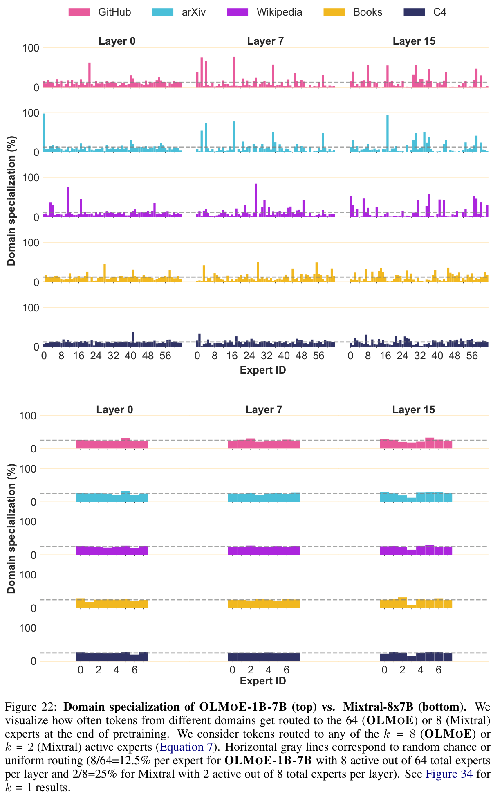
（接第 20 页。）
，见 §5.4。对于 C4 [139] 等通用领域——C4 是包含各种类型数据的网页抓取数据集——OLMOE-1B-7B 的专家激活要均衡得多。这说明负载均衡（§4.1.6）按预期工作，模型对通用数据能够适当使用所有专家。然而，图 22（下）中的 Mixtral-8x7B [79] 在独特领域和通用领域都几乎没有领域专门化。对于所有层和领域，专家激活都接近均匀路由基线。因此，Mixtral 的专家之间可能存在更多冗余，因为它们很可能包含相似知识。我们假设，这源于 Mixtral 由 Mistral 升级再利用而来 [25]。从稠密模型初始化可能限制专家可达到的专门化程度，因为它们都从同一个局部最优点开始。这很可能解释了为什么在我们的预训练实验中，从头训练最终超过升级再利用（§4.1.5）。
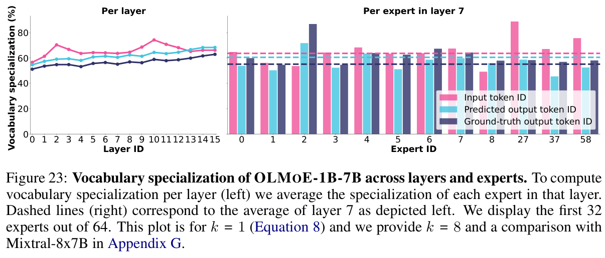
我们将词表专门化定义为：具有 token ID \(x\)（也称词表元素）的 token，被路由到该层中某个特定专家 \(E_{i}\) 的比例：
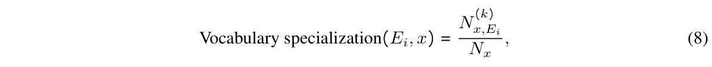
其中：
因此，词表专门化指特定专家对某个词表项的专门化程度。我们区分这种专门化的输入变体与输出变体，其中 \(x\) 分别为输入 token ID 或下一个输出 token ID（可以是真实的下一个 token ID，也可以是模型预测的 token ID）。100% 表示，该词表元素每次出现时，输入数据都会被路由到 \(E_{i}\)；0% 则表示该专家与这一词表元素完全无关，只要该 token ID 出现，就可以有效地将该专家从模型中移除而不影响性能。
在图 23 中，我们发现，较后层的词表专门化更高，类似于较后层更早饱和（§5.1）。较后层也更专门化于预测输出 token ID，而非输入 token ID，即路由决策更多取决于模型即将预测的 token，而不是原始输入 token。这符合直觉，因为在较前层，模型将预测哪个 token 的不确定性更大。专家 27 的专门化最高，约为 90%；表 8 显示，它会因许多非字母 token 而激活，例如 Cyrillic 和 Devanagari 字母。
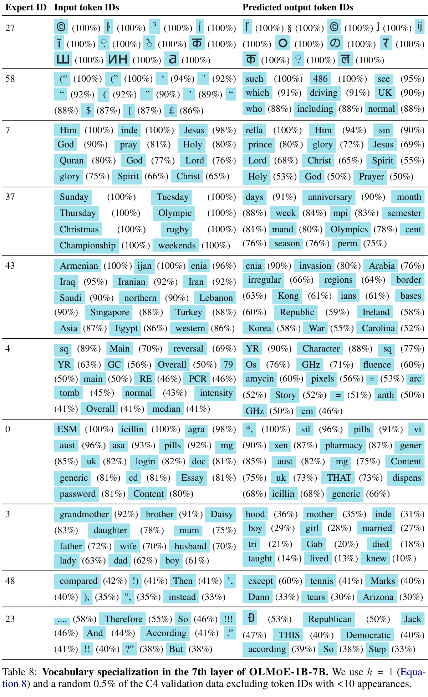
专家 43 在输入和输出 token 上都表现出对地理术语的专门化。专家 48 和 23 都关注 Then 和 Therefore 等连接词。这很可能是因为，它们经常一起处理 token，在图 21（中）中的共同激活率高达 60%。基于 §5.3 的发现，即 GitHub 和 arXiv 往往激活第 7 层的相同专家，我们在表 8 中展示了这样一个专家（专家 ID 4）。它似乎专门处理 sq、YR（year）和 GHz 等计量术语。这些是 arXiv 领域科学论文中的常见术语，也很可能出现在与计量计算相关的 GitHub 代码中。它们在书籍中出现的可能性较低，这解释了图 22 中书籍数据对第 7 层专家 ID 4 的激活较少。图 22 中，专家 3 是第 7 层在书籍数据上最活跃的三个专家之一（第 7 层的第四根黄色柱）。表 8 显示它专门处理家庭术语，这与上述发现相吻合，因为这些术语在书籍中比在科学论文或代码中常见得多。总体而言，领域专门化与词表专门化紧密相关，因为不同领域通常以独特的词分布为特征。在附录 G（图 32）中，我们通过比较不同领域与专家 ID 的词表专门化程度，进一步联系二者。在附录 G（图 30、图 31）中，我们还发现，OLMOE-1B-7B 的词表专门化强于 Mixtral-8x7B。
MoE 的进展。当前语言模型仍主要遵循 Transformer 架构 [185]，只有少数架构变化获得广泛采用，例如仅解码器训练 [137]、SwiGLU 激活 [153, 41]、RoPE [166]、MQA/GQA [152, 3] 和 RMSNorm [208]。通过 MoE 实现模型稀疏性，是仍在积极探索的改动，已有一些早期采用者，但包括 Llama 3 [50] 在内的大多数语言模型仍依赖稠密架构。自稀疏门控 MoE 层被提出 [154] 以来，其改进已取得大量进展：新的路由技术 [89, 146, 222, 66, 77, 49, 215, 195, 124]、细粒度专家划分 [39, 69]、稳定性 [221] 和效率 [88, 141, 48, 218, 91, 168, 129, 145] 改进。在本工作中，我们进行许多实验，以提供关于训练 MoE 语言模型的见解。随后，我们让 OLMOE-1B-7B 训练 5T token。据我们所知，此前没有 MoE 被过度训练 [57] 到这一程度，使 OLMOE-1B-7B 成为研究 MoE 与稠密模型性能饱和的最佳试验平台。我们希望 OLMOE 能促进此类及其他研究，帮助领域判断 MoE 是否应进入所有未来语言模型，以及应采用何种精确配置。
开放语言模型。已有多种模型系列以不同开放程度被提出，通常根据是否提供模型权重分类。闭源权重模型包括 GPT [24, 128]、Gemini [174, 175]、PaLM [30, 9] 和 Reka [181]；开放权重模型包括 Llama [182, 183, 50]、Mistral [78, 79]、Gemma [176, 177]、Falcon [8, 132]、MPT [179]、Qwen [13, 201]、GLM [61]、Yi [2]、DeepSeek [42, 43, 39]、Nemotron [130, 126]、Zamba [62]、InternLM [26]、Baichuan [200]、Phi [68, 94, 1]、StableLM [16] 和 OPT [212]。然而，除了模型权重，训练数据与代码也是开展这些模型的科学研究 [105, 106] 以及广泛分配其收益 [23] 的关键。只有少数发布在模型权重之外还包含数据与代码，我们将其称为“完全开源”：BLOOM [193, 151, 123, 203]、GPT-NeoX [21, 22, 186]、StarCoder [92, 109, 5, 120, 220]、Pythia [18]、OLMo [65]、LLM360 [103]、Cerebras-GPT [46]、DCLM [90]、MAP-Neo [209]、RWKV [133, 134] 和 SmolLM [6]。对于 MoE，只有 OpenMoE [199] 以完全开源为目标，但其较差表现限制了实用性。我们发布 OLMOE-1B-7B，作为第一个达到当前最佳水平、且模型权重、数据、代码与日志完全开源的 MoE 语言模型。
我们开源 OLMOE-1B-7B 和 OLMOE-1B-7B-INSTRUCT，包括模型、数据、代码与日志。以 1B 激活参数和 7B 总参数，我们的模型在激活参数量相近的模型中取得当前最佳表现，甚至超过包括 DeepSeekMoE-16B 和 Llama2-13B-Chat 在内的更大模型。我们分享多种训练实验，并定义和分析模型的路由器饱和度、专家共同激活、领域专门化与词表专门化。通过完全开放的发布，我们希望帮助领域构建更好的 MoE。我们期待 OLMOE 的更多迭代，缩小前沿模型与完全开放模型之间的差距。
Niklas Muennighoff 提出并领导项目。他开展预训练实验，预训练模型，协助开展适配与分析，并撰写论文的大部分内容。
Luca Soldaini 创建预训练数据集，并就预训练提供建议。
Dirk Groeneveld 就预训练提供建议，尤其是稳定性与吞吐量改进。
Kyle Lo 协助创建预训练数据集，分析数据实验，就数据和论文论述框架提供建议，并协助编辑论文。
Jacob Morrison 共同创建适配数据集，开展大多数适配实验，并协助编辑论文。
Sewon Min 分析路由器饱和度、专家相关性和词表专门化，并协助构建论文论述框架及编辑论文。
Weijia Shi 分析领域与词表专门化，在项目多个阶段提供建议，并协助编辑论文。
Pete Walsh 就预训练提供建议，尤其是稳定性与吞吐量改进。
Oyvind Tafjord 运行 OLMES 评测。
Nathan Lambert 共同创建适配数据集，就适配提供建议，并协助编辑论文。
Yuling Gu 运行 OLMES 评测，并协助编辑论文。
Shane Arora 上传模型，协助代码审查和框架集成。
Akshita Bhagia 支持稳定性调查，并协助 DCLM 评测。
Dustin Schwenk 支持稳定性调查。
David Wadden 运行 DCLM 评测，并协助制作 Weights & Biases 报告。
Alexander Wettig 就预训练提供建议，分析负载均衡、路由和领域专门化，并协助编辑论文。
Binyuan Hui 就预训练提供建议，并协助绘图和框架集成。
Tim Dettmers 就分析与推理实验提供建议。
Douwe Kiela 就论文论述框架提供建议。
Ali Farhadi 就预训练和论文论述框架提供建议。
Noah A. Smith 就预训练提供建议，并协助构建论文论述框架及编辑论文。
Pang Wei Koh 就分析提供建议，并协助构建论文论述框架及编辑论文。
Amanpreet Singh 就预训练、论文论述框架提供建议，并协助编辑论文。
Hannaneh Hajishirzi 负责整个工作的方向与指导，并协助构建论文论述框架及编辑论文。
没有许多个人与机构的支持，OLMOE 就不可能实现。我们感谢 Allen Institute for AI、Contextual AI 和 University of Washington 的同事提供支持，尤其是 Aditya Kusupati、Ananya Harsh Jha、Caitlin Wittlif、Carissa Schoenick、Costa Huang、Crystal Nam、David Atkinson、Emma Strubell、Faeze Brahman、Hamish Ivison、Karel D’Oosterlinck、Matt Latzke、Ian Magnusson、Jack Merullo、Jay Chen、Jennifer Dumas、Jiacheng Liu、Johann Dahm、Luke Zettlemoyer、Michael Schmitz、Michael Wilson、Pradeep Dasigi、Sahil Verma、Sam Skjonsberg、Sophie Lebrecht、Stas Bekman、Taira Anderson、Valentina Pyatkin、Yanai Elazar、Yizhong Wang 和 Yoganand Chandrasekhar。我们还感谢 Armen Aghajanyan、Akshat Shrivastava、Colin Raffel、Haokun Liu、Ludwig Schmidt、Mengzhou Xia、Shayne Longpre、Sheng Shen 和 Zexuan Zhong。PWK 获得 Singapore National Research Foundation 以及 Singapore Ministry of Digital Development and Innovation 下属 National AI Group 的 AI Visiting Professorship Programme 支持（资助编号 AIVP-2024-001）。
[1] Marah Abdin, Sam Ade Jacobs, Ammar Ahmad Awan, Jyoti Aneja, Ahmed Awadallah, Hany Awadalla, Nguyen Bach, Amit Bahree, Arash Bakhtiari, Jianmin Bao, Harkirat Behl, Alon Benhaim, Misha Bilenko, Johan Bjorck, S´ebastien Bubeck, Qin Cai, Martin Cai, Caio C´esar Teodoro Mendes, Weizhu Chen, Vishrav Chaudhary, Dong Chen, Dongdong Chen, Yen-Chun Chen, Yi-Ling Chen, Parul Chopra, Xiyang Dai, Allie Del Giorno, Gustavo de Rosa, Matthew Dixon, Ronen Eldan, Victor Fragoso, Dan Iter, Mei Gao, Min Gao, Jianfeng Gao, Amit Garg, Abhishek Goswami, Suriya Gunasekar, Emman Haider, Junheng Hao, Russell J. Hewett, Jamie Huynh, Mojan Javaheripi, Xin Jin, Piero Kauffmann, Nikos Karampatziakis, Dongwoo Kim, Mahoud Khademi, Lev Kurilenko, James R. Lee, Yin Tat Lee, Yuanzhi Li, Yunsheng Li, Chen Liang, Lars Liden, Ce Liu, Mengchen Liu, Weishung Liu, Eric Lin, Zeqi Lin, Chong Luo, Piyush Madan, Matt Mazzola, Arindam Mitra, Hardik Modi, Anh Nguyen, Brandon Norick, Barun Patra, Daniel Perez-Becker, Thomas Portet, Reid Pryzant, Heyang Qin, Marko Radmilac, Corby Rosset, Sambudha Roy, Olatunji Ruwase, Olli Saarikivi, Amin Saied, Adil Salim, Michael Santacroce, Shital Shah, Ning Shang, Hiteshi Sharma, Swadheen Shukla, Xia Song, Masahiro Tanaka, Andrea Tupini, Xin Wang, Lijuan Wang, Chunyu Wang, Yu Wang, Rachel Ward, Guanhua Wang, Philipp Witte, Haiping Wu, Michael Wyatt, Bin Xiao, Can Xu, Jiahang Xu, Weijian Xu, Sonali Yadav, Fan Yang, Jianwei Yang, Ziyi Yang, Yifan Yang, Donghan Yu, Lu Yuan, Chengruidong Zhang, Cyril Zhang, Jianwen Zhang, Li Lyna Zhang, Yi Zhang, Yue Zhang, Yunan Zhang, and Xiren Zhou. 2024. Phi-3 技术报告：在手机本地运行的高能力语言模型.
[2] 01. AI, :, Alex Young, Bei Chen, Chao Li, Chengen Huang, Ge Zhang, Guanwei Zhang, Heng Li, Jiangcheng Zhu, Jianqun Chen, Jing Chang, Kaidong Yu, Peng Liu, Qiang Liu, Shawn Yue, Senbin Yang, Shiming Yang, Tao Yu, Wen Xie, Wenhao Huang, Xiaohui Hu, Xiaoyi Ren, Xinyao Niu, Pengcheng Nie, Yuchi Xu, Yudong Liu, Yue Wang, Yuxuan Cai, Zhenyu Gu, Zhiyuan Liu, and Zonghong Dai. 2024. Yi：01.AI 的开放基础模型.
[3] Joshua Ainslie, James Lee-Thorp, Michiel de Jong, Yury Zemlyanskiy, Federico Lebr´on, and Sumit Sanghai. 2023. GQA：从多头 checkpoint 训练广义多查询 Transformer 模型.
[4] Alon Albalak, Yanai Elazar, Sang Michael Xie, Shayne Longpre, Nathan Lambert, Xinyi Wang, Niklas Muennighoff, Bairu Hou, Liangming Pan, Haewon Jeong, Colin Raffel, Shiyu Chang, Tatsunori Hashimoto, and William Yang Wang. 2024. 语言模型数据选择综述.
[5] Loubna Ben Allal, Raymond Li, Denis Kocetkov, Chenghao Mou, Christopher Akiki, Carlos Munoz Ferrandis, Niklas Muennighoff, Mayank Mishra, Alex Gu, Manan Dey, 等人 2023. SantaCoder：别好高骛远！
[6] Loubna Ben Allal, Anton Lozhkov, Elie Bakouch, Leandro von Werra, and Thomas Wolf. 2024. SmolLM：极快且表现出色.
[7] Zeyuan Allen-Zhu and Yuanzhi Li. 2024. 语言模型物理学：第 3.3 部分，知识容量 scaling laws.
[8] Ebtesam Almazrouei, Hamza Alobeidli, Abdulaziz Alshamsi, Alessandro Cappelli, Ruxandra Cojocaru, M´erouane Debbah, ´Etienne Goffinet, Daniel Hesslow, Julien Launay, Quentin Malartic, Daniele Mazzotta, Badreddine Noune, Baptiste Pannier, and Guilherme Penedo. 2023. Falcon 开放语言模型系列.
[9] Rohan Anil, Andrew M. Dai, Orhan Firat, Melvin Johnson, Dmitry Lepikhin, Alexandre Passos, Siamak Shakeri, Emanuel Taropa, Paige Bailey, Zhifeng Chen, Eric Chu, Jonathan H. Clark, Laurent El Shafey, Yanping Huang, Kathy Meier-Hellstern, Gaurav Mishra, Erica Moreira, Mark Omernick, Kevin Robinson, Sebastian Ruder, Yi Tay, Kefan Xiao, Yuanzhong Xu, Yujing Zhang, Gustavo Hernandez Abrego, Junwhan Ahn, Jacob Austin, Paul Barham, Jan Botha, James Bradbury, Siddhartha Brahma, Kevin Brooks, Michele Catasta, Yong Cheng, Colin Cherry, Christopher A. Choquette-Choo, Aakanksha Chowdhery, Cl´ement Crepy, Shachi Dave, Mostafa Dehghani, Sunipa Dev, Jacob Devlin, Mark D´ıaz, Nan Du, Ethan Dyer, Vlad Feinberg, Fangxiaoyu Feng, Vlad Fienber, Markus Freitag, Xavier Garcia,
Sebastian Gehrmann, Lucas Gonzalez, Guy Gur-Ari, Steven Hand, Hadi Hashemi, Le Hou, Joshua Howland, Andrea Hu, Jeffrey Hui, Jeremy Hurwitz, Michael Isard, Abe Ittycheriah, Matthew Jagielski, Wenhao Jia, Kathleen Kenealy, Maxim Krikun, Sneha Kudugunta, Chang Lan, Katherine Lee, Benjamin Lee, Eric Li, Music Li, Wei Li, YaGuang Li, Jian Li, Hyeontaek Lim, Hanzhao Lin, Zhongtao Liu, Frederick Liu, Marcello Maggioni, Aroma Mahendru, Joshua Maynez, Vedant Misra, Maysam Moussalem, Zachary Nado, John Nham, Eric Ni, Andrew Nystrom, Alicia Parrish, Marie Pellat, Martin Polacek, Alex Polozov, Reiner Pope, Siyuan Qiao, Emily Reif, Bryan Richter, Parker Riley, Alex Castro Ros, Aurko Roy, Brennan Saeta, Rajkumar Samuel, Renee Shelby, Ambrose Slone, Daniel Smilkov, David R. So, Daniel Sohn, Simon Tokumine, Dasha Valter, Vijay Vasudevan, Kiran Vodrahalli, Xuezhi Wang, Pidong Wang, Zirui Wang, Tao Wang, John Wieting, Yuhuai Wu, Kelvin Xu, Yunhan Xu, Linting Xue, Pengcheng Yin, Jiahui Yu, Qiao Zhang, Steven Zheng, Ce Zheng, Weikang Zhou, Denny Zhou, Slav Petrov, and Yonghui Wu. 2023. PaLM 2 技术报告.
[10] Mikel Artetxe, Shruti Bhosale, Naman Goyal, Todor Mihaylov, Myle Ott, Sam Shleifer, Xi Victoria Lin, Jingfei Du, Srinivasan Iyer, Ramakanth Pasunuru, Giri Anantharaman, Xian Li, Shuohui Chen, Halil Akin, Mandeep Baines, Louis Martin, Xing Zhou, Punit Singh Koura, Brian O’Horo, Jeff Wang, Luke Zettlemoyer, Mona Diab, Zornitsa Kozareva, and Ves Stoyanov. 2022. 使用 MoE 进行高效的大规模语言建模.
[11] Zhangir Azerbayev, Hailey Schoelkopf, Keiran Paster, Marco Dos Santos, Stephen McAleer, Albert Q. Jiang, Jia Deng, Stella Biderman, and Sean Welleck. 2023. Llemma：面向数学的开放语言模型.
[12] Jimmy Lei Ba, Jamie Ryan Kiros, and Geoffrey E. Hinton. 2016. 层归一化.
[13] Jinze Bai, Shuai Bai, Yunfei Chu, Zeyu Cui, Kai Dang, Xiaodong Deng, Yang Fan, Wenbin Ge, Yu Han, Fei Huang, Binyuan Hui, Luo Ji, Mei Li, Junyang Lin, Runji Lin, Dayiheng Liu, Gao Liu, Chengqiang Lu, Keming Lu, Jianxin Ma, Rui Men, Xingzhang Ren, Xuancheng Ren, Chuanqi Tan, Sinan Tan, Jianhong Tu, Peng Wang, Shijie Wang, Wei Wang, Shengguang Wu, Benfeng Xu, Jin Xu, An Yang, Hao Yang, Jian Yang, Shusheng Yang, Yang Yao, Bowen Yu, Hongyi Yuan, Zheng Yuan, Jianwei Zhang, Xingxuan Zhang, Yichang Zhang, Zhenru Zhang, Chang Zhou, Jingren Zhou, Xiaohuan Zhou, and Tianhang Zhu. 2023. Qwen 技术报告.
[14] Jinze Bai, Shuai Bai, Shusheng Yang, Shijie Wang, Sinan Tan, Peng Wang, Junyang Lin, Chang Zhou, and Jingren Zhou. 2023. Qwen-VL：面向理解、定位、文字阅读及更多任务的通用 VLM.
[15] Yuntao Bai, Saurav Kadavath, Sandipan Kundu, Amanda Askell, Jackson Kernion, Andy Jones, Anna Chen, Anna Goldie, Azalia Mirhoseini, Cameron McKinnon, Carol Chen, Catherine Olsson, Christopher Olah, Danny Hernandez, Dawn Drain, Deep Ganguli, Dustin Li, Eli Tran-Johnson, Ethan Perez, Jamie Kerr, Jared Mueller, Jeffrey Ladish, Joshua Landau, Kamal Ndousse, Kamile Lukosuite, Liane Lovitt, Michael Sellitto, Nelson Elhage, Nicholas Schiefer, Noemi Mercado, Nova DasSarma, Robert Lasenby, Robin Larson, Sam Ringer, Scott Johnston, Shauna Kravec, Sheer El Showk, Stanislav Fort, Tamera Lanham, Timothy Telleen-Lawton, Tom Conerly, Tom Henighan, Tristan Hume, Samuel R. Bowman, Zac Hatfield-Dodds, Ben Mann, Dario Amodei, Nicholas Joseph, Sam McCandlish, Tom Brown, and Jared Kaplan. 2022. Constitutional AI：通过 AI 反馈实现无害性.
[16] Marco Bellagente, Jonathan Tow, Dakota Mahan, Duy Phung, Maksym Zhuravinskyi, Reshinth Adithyan, James Baicoianu, Ben Brooks, Nathan Cooper, Ashish Datta, Meng Lee, Emad Mostaque, Michael Pieler, Nikhil Pinnaparju, Paulo Rocha, Harry Saini, Hannah Teufel, Niccolo Zanichelli, and Carlos Riquelme. 2024. Stable LM 2 1.6B 技术报告.
[17] Emmanuel Bengio, Pierre-Luc Bacon, Joelle Pineau, and Doina Precup. 2016. 神经网络中的条件计算：实现更快的模型.
[18] Stella Biderman, Hailey Schoelkopf, Quentin Anthony, Herbie Bradley, Kyle O’Brien, Eric Hallahan, Mohammad Aflah Khan, Shivanshu Purohit, USVSN Sai Prashanth, Edward Raff, Aviya Skowron, Lintang Sutawika, and Oskar van der Wal. 2023. Pythia：跨训练和规模扩展分析 LLM 的套件.
[19] Stella Biderman, Hailey Schoelkopf, Lintang Sutawika, Leo Gao, Jonathan Tow, Baber Abbasi, Alham Fikri Aji, Pawan Sasanka Ammanamanchi, Sidney Black, Jordan Clive, Anthony DiPofi, Julen Etxaniz, Benjamin Fattori, Jessica Zosa Forde, Charles Foster, Jeffrey Hsu, Mimansa Jaiswal, Wilson Y. Lee, Haonan Li, Charles Lovering, Niklas Muennighoff, Ellie Pavlick, Jason Phang, Aviya Skowron, Samson Tan, Xiangru Tang, Kevin A. Wang, Genta Indra Winata, Franc¸ois Yvon, and Andy Zou. 2024. 来自实践一线的语言模型可复现评测经验.
[20] Yonatan Bisk, Rowan Zellers, Ronan Le Bras, Jianfeng Gao, and Yejin Choi. 2019. PIQA：用自然语言推理物理常识.
[21] Sid Black, Stella Biderman, Eric Hallahan, Quentin Anthony, Leo Gao, Laurence Golding, Horace He, Connor Leahy, Kyle McDonell, Jason Phang, Michael Pieler, USVSN Sai Prashanth, Shivanshu Purohit, Laria Reynolds, Jonathan Tow, Ben Wang, and Samuel Weinbach. 2022. GPT-NeoX-20B：开源自回归语言模型.
[22] Sid Black, Leo Gao, Phil Wang, Connor Leahy, and Stella Biderman. 2021. GPT-Neo：使用 Mesh-Tensorflow 进行大规模自回归语言建模.
[23] Rishi Bommasani, Kevin Klyman, Shayne Longpre, Sayash Kapoor, Nestor Maslej, Betty Xiong, Daniel Zhang, and Percy Liang. 2023. 基础模型透明度指数.
[24] Tom B. Brown, Benjamin Mann, Nick Ryder, Melanie Subbiah, Jared Kaplan, Prafulla Dhariwal, Arvind Neelakantan, Pranav Shyam, Girish Sastry, Amanda Askell, 等人 2020. 语言模型是少样本学习者.
[25] Tianle Cai. 2023. 从 Mistral 得到 Mixtral.
[26] Zheng Cai, Maosong Cao, Haojiong Chen, Kai Chen, Keyu Chen, Xin Chen, Xun Chen, Zehui Chen, Zhi Chen, Pei Chu, Xiaoyi Dong, Haodong Duan, Qi Fan, Zhaoye Fei, Yang Gao, Jiaye Ge, Chenya Gu, Yuzhe Gu, Tao Gui, Aijia Guo, Qipeng Guo, Conghui He, Yingfan Hu, Ting Huang, Tao Jiang, Penglong Jiao, Zhenjiang Jin, Zhikai Lei, Jiaxing Li, Jingwen Li, Linyang Li, Shuaibin Li, Wei Li, Yining Li, Hongwei Liu, Jiangning Liu, Jiawei Hong, Kaiwen Liu, Kuikun Liu, Xiaoran Liu, Chengqi Lv, Haijun Lv, Kai Lv, Li Ma, Runyuan Ma, Zerun Ma, Wenchang Ning, Linke Ouyang, Jiantao Qiu, Yuan Qu, Fukai Shang, Yunfan Shao, Demin Song, Zifan Song, Zhihao Sui, Peng Sun, Yu Sun, Huanze Tang, Bin Wang, Guoteng Wang, Jiaqi Wang, Jiayu Wang, Rui Wang, Yudong Wang, Ziyi Wang, Xingjian Wei, Qizhen Weng, Fan Wu, Yingtong Xiong, Chao Xu, Ruiliang Xu, Hang Yan, Yirong Yan, Xiaogui Yang, Haochen Ye, Huaiyuan Ying, Jia Yu, Jing Yu, Yuhang Zang, Chuyu Zhang, Li Zhang, Pan Zhang, Peng Zhang, Ruijie Zhang, Shuo Zhang, Songyang Zhang, Wenjian Zhang, Wenwei Zhang, Xingcheng Zhang, Xinyue Zhang, Hui Zhao, Qian Zhao, Xiaomeng Zhao, Fengzhe Zhou, Zaida Zhou, Jingming Zhuo, Yicheng Zou, Xipeng Qiu, Yu Qiao, and Dahua Lin. 2024. InternLM2 技术报告.
[27] Mark Chen, Alec Radford, Rewon Child, Jeffrey Wu, Heewoo Jun, David Luan, and Ilya Sutskever. 2020. 从像素进行生成式预训练.
[28] Mark Chen, Jerry Tworek, Heewoo Jun, Qiming Yuan, Henrique Ponde de Oliveira Pinto, Jared Kaplan, Harri Edwards, Yuri Burda, Nicholas Joseph, Greg Brockman, Alex Ray, Raul Puri, Gretchen Krueger, Michael Petrov, Heidy Khlaaf, Girish Sastry, Pamela Mishkin, Brooke Chan, Scott Gray, Nick Ryder, Mikhail Pavlov, Alethea Power, Lukasz Kaiser, Mohammad Bavarian, Clemens Winter, Philippe Tillet, Felipe Petroski Such, Dave Cummings, Matthias Plappert, Fotios Chantzis, Elizabeth Barnes, Ariel Herbert-Voss, William Hebgen Guss, Alex Nichol, Alex Paino, Nikolas Tezak, Jie Tang, Igor Babuschkin, Suchir Balaji, Shantanu Jain, William Saunders, Christopher Hesse, Andrew N. Carr, Jan Leike, Josh Achiam, Vedant Misra, Evan Morikawa, Alec Radford, Matthew Knight, Miles Brundage, Mira Murati, Katie Mayer, Peter Welinder, Bob McGrew, Dario Amodei, Sam McCandlish, Ilya Sutskever, and Wojciech Zaremba. 2021. 评估使用代码训练的 LLM.
[29] Soumith Chintala. 2024. GPT-4 MoE.
[30] Aakanksha Chowdhery, Sharan Narang, Jacob Devlin, Maarten Bosma, Gaurav Mishra, Adam Roberts, Paul Barham, Hyung Won Chung, Charles Sutton, Sebastian Gehrmann, 等人 2022. PaLM：使用 Pathways 扩展语言建模.
[31] Paul Christiano, Jan Leike, Tom B. Brown, Miljan Martic, Shane Legg, and Dario Amodei. 2023. 通过人类偏好进行深度强化学习.
[32] Aidan Clark, Diego de las Casas, Aurelia Guy, Arthur Mensch, Michela Paganini, Jordan Hoffmann, Bogdan Damoc, Blake Hechtman, Trevor Cai, Sebastian Borgeaud, George van den Driessche, Eliza Rutherford, Tom Hennigan, Matthew Johnson, Katie Millican, Albin Cassirer, Chris Jones, Elena Buchatskaya, David Budden, Laurent Sifre, Simon Osindero, Oriol Vinyals, Jack Rae, Erich Elsen, Koray Kavukcuoglu, and Karen Simonyan. 2022. 路由语言模型的统一 scaling laws.
[33] Christopher Clark, Kenton Lee, Ming-Wei Chang, Tom Kwiatkowski, Michael Collins, and Kristina Toutanova. 2019. BoolQ：探索自然的是非问题出人意料的难度.
[34] Peter Clark, Isaac Cowhey, Oren Etzioni, Tushar Khot, Ashish Sabharwal, Carissa Schoenick, and Oyvind Tafjord. 2018. 认为你已解决问答问题？试试 ARC，即 AI2 推理挑战.
[35] Karl Cobbe, Vineet Kosaraju, Mohammad Bavarian, Mark Chen, Heewoo Jun, Lukasz Kaiser, Matthias Plappert, Jerry Tworek, Jacob Hilton, Reiichiro Nakano, Christopher Hesse, and John Schulman. 2021. 训练验证器以解决数学应用题.
[36] Together Computer. 2023. RedPajama：复现 LLaMA 训练数据集的开源配方.
[37] R´obert Csord´as, Kazuki Irie, J¨urgen Schmidhuber, Christopher Potts, and Christopher D. Manning. 2024. MoEUT：MoE 通用 Transformer.
[38] Ganqu Cui, Lifan Yuan, Ning Ding, Guanming Yao, Wei Zhu, Yuan Ni, Guotong Xie, Zhiyuan Liu, and Maosong Sun. 2023. UltraFeedback：通过高质量反馈提升语言模型.
[39] Damai Dai, Chengqi Deng, Chenggang Zhao, R. X. Xu, Huazuo Gao, Deli Chen, Jiashi Li, Wangding Zeng, Xingkai Yu, Y. Wu, Zhenda Xie, Y. K. Li, Panpan Huang, Fuli Luo, Chong Ruan, Zhifang Sui, and Wenfeng Liang. 2024. DeepSeekMoE：迈向 MoE 语言模型中的极致专家专门化.
[40] Databricks. 2024. DBRX.
[41] Yann N. Dauphin, Angela Fan, Michael Auli, and David Grangier. 2017. 使用门控卷积网络进行语言建模.
[42] DeepSeek-AI, :, Xiao Bi, Deli Chen, Guanting Chen, Shanhuang Chen, Damai Dai, Chengqi Deng, Honghui Ding, Kai Dong, Qiushi Du, Zhe Fu, Huazuo Gao, Kaige Gao, Wenjun Gao, Ruiqi Ge, Kang Guan, Daya Guo, Jianzhong Guo, Guangbo Hao, Zhewen Hao, Ying He, Wenjie Hu, Panpan Huang, Erhang Li, Guowei Li, Jiashi Li, Yao Li, Y. K. Li, Wenfeng Liang, Fangyun Lin, A. X. Liu, Bo Liu, Wen Liu, Xiaodong Liu, Xin Liu, Yiyuan Liu, Haoyu Lu, Shanghao Lu, Fuli Luo, Shirong Ma, Xiaotao Nie, Tian Pei, Yishi Piao, Junjie Qiu, Hui Qu, Tongzheng Ren, Zehui Ren, Chong Ruan, Zhangli Sha, Zhihong Shao, Junxiao Song, Xuecheng Su, Jingxiang Sun, Yaofeng Sun, Minghui Tang, Bingxuan Wang, Peiyi Wang, Shiyu Wang, Yaohui Wang, Yongji Wang, Tong Wu, Y. Wu, Xin Xie, Zhenda Xie, Ziwei Xie, Yiliang Xiong, Hanwei Xu, R. X. Xu, Yanhong Xu, Dejian Yang, Yuxiang You, Shuiping Yu, Xingkai Yu, B. Zhang, Haowei Zhang, Lecong Zhang, Liyue Zhang, Mingchuan Zhang, Minghua Zhang, Wentao Zhang, Yichao Zhang, Chenggang Zhao, Yao Zhao, Shangyan Zhou, Shunfeng Zhou, Qihao Zhu, and Yuheng Zou. 2024. DeepSeek LLM：以长期主义扩展开源语言模型.
[43] DeepSeek-AI, Aixin Liu, Bei Feng, Bin Wang, Bingxuan Wang, Bo Liu, Chenggang Zhao, Chengqi Dengr, Chong Ruan, Damai Dai, Daya Guo, Dejian Yang, Deli Chen, Dongjie Ji, Erhang Li, Fangyun Lin, Fuli Luo, Guangbo Hao, Guanting Chen, Guowei Li, H. Zhang, Hanwei Xu, Hao Yang, Haowei Zhang, Honghui Ding, Huajian Xin, Huazuo Gao, Hui Li, Hui Qu, J. L. Cai, Jian Liang, Jianzhong Guo, Jiaqi Ni, Jiashi Li, Jin Chen, Jingyang Yuan, Junjie Qiu, Junxiao Song, Kai Dong, Kaige Gao, Kang Guan, Lean Wang, Lecong Zhang, Lei Xu, Leyi Xia, Liang Zhao, Liyue Zhang, Meng Li, Miaojun Wang, Mingchuan Zhang, Minghua Zhang, Minghui Tang, Mingming Li, Ning Tian, Panpan Huang, Peiyi Wang, Peng Zhang, Qihao Zhu, Qinyu Chen, Qiushi Du, R. J. Chen, R. L. Jin, Ruiqi Ge, Ruizhe Pan, Runxin Xu, Ruyi Chen, S. S. Li, Shanghao Lu, Shangyan Zhou, Shanhuang Chen, Shaoqing Wu, Shengfeng Ye, Shirong Ma, Shiyu Wang, Shuang Zhou, Shuiping Yu, Shunfeng Zhou, Size Zheng, T. Wang, Tian Pei, Tian Yuan, Tianyu Sun, W. L. Xiao, Wangding Zeng, Wei An, Wen Liu, Wenfeng Liang, Wenjun Gao, Wentao Zhang, X. Q. Li, Xiangyue Jin, Xianzu Wang, Xiao Bi, Xiaodong Liu, Xiaohan Wang, Xiaojin Shen, Xiaokang Chen, Xiaosha Chen, Xiaotao Nie, Xiaowen Sun, Xiaoxiang Wang, Xin Liu, Xin Xie, Xingkai Yu, Xinnan Song, Xinyi Zhou, Xinyu Yang, Xuan Lu, Xuecheng Su, Y. Wu, Y. K. Li, Y. X. Wei, Y. X. Zhu, Yanhong Xu, Yanping Huang, Yao Li, Yao Zhao, Yaofeng Sun, Yaohui Li, Yaohui Wang, Yi Zheng, Yichao Zhang, Yiliang Xiong, Yilong Zhao, Ying He, Ying Tang, Yishi Piao, Yixin Dong, Yixuan Tan, Yiyuan Liu, Yongji Wang, Yongqiang Guo, Yuchen Zhu, Yuduan Wang, Yuheng Zou, Yukun Zha, Yunxian Ma, Yuting Yan, Yuxiang You, Yuxuan Liu, Z. Z. Ren, Zehui Ren, Zhangli Sha, Zhe Fu, Zhen Huang, Zhen Zhang, Zhenda Xie, Zhewen Hao, Zhihong Shao, Zhiniu Wen, Zhipeng Xu, Zhongyu Zhang, Zhuoshu Li, Zihan Wang, Zihui Gu, Zilin Li, and Ziwei Xie. 2024. DeepSeek-V2：强大、经济且高效的 MoE 语言模型.
[44] Mostafa Dehghani, Josip Djolonga, Basil Mustafa, Piotr Padlewski, Jonathan Heek, Justin Gilmer, Andreas Steiner, Mathilde Caron, Robert Geirhos, Ibrahim Alabdulmohsin, Rodolphe Jenatton, Lucas Beyer, Michael Tschannen, Anurag Arnab, Xiao Wang, Carlos Riquelme, Matthias Minderer, Joan Puigcerver, Utku Evci, Manoj Kumar, Sjoerd van Steenkiste, Gamaleldin F. Elsayed, Aravindh Mahendran, Fisher Yu, Avital Oliver, Fantine Huot, Jasmijn Bastings, Mark Patrick Collier, Alexey Gritsenko, Vighnesh Birodkar, Cristina Vasconcelos, Yi Tay, Thomas Mensink, Alexander Kolesnikov, Filip Paveti´c, Dustin Tran, Thomas Kipf, Mario Luˇci´c, Xiaohua Zhai, Daniel Keysers, Jeremiah Harmsen, and Neil Houlsby. 2023. 将视觉 Transformer 扩展至 220 亿参数.
[45] Mostafa Dehghani, Stephan Gouws, Oriol Vinyals, Jakob Uszkoreit, and Łukasz Kaiser. 2019. 通用 Transformer.
[46] Nolan Dey, Gurpreet Gosal, Zhiming, Chen, Hemant Khachane, William Marshall, Ribhu Pathria, Marvin Tom, and Joel Hestness. 2023. Cerebras-GPT：在 Cerebras 晶圆级集群上训练的开放计算最优语言模型.
[47] Danny Driess, Fei Xia, Mehdi S. M. Sajjadi, Corey Lynch, Aakanksha Chowdhery, Brian Ichter, Ayzaan Wahid, Jonathan Tompson, Quan Vuong, Tianhe Yu, Wenlong Huang, Yevgen Chebotar, Pierre Sermanet, Daniel Duckworth, Sergey Levine, Vincent Vanhoucke, Karol Hausman, Marc Toussaint, Klaus Greff, Andy Zeng, Igor Mordatch, and Pete Florence. 2023. PaLM-E：具身多模态语言模型.
[48] Nan Du, Yanping Huang, Andrew M. Dai, Simon Tong, Dmitry Lepikhin, Yuanzhong Xu, Maxim Krikun, Yanqi Zhou, Adams Wei Yu, Orhan Firat, Barret Zoph, Liam Fedus, Maarten Bosma, Zongwei Zhou, Tao Wang, Yu Emma Wang, Kellie Webster, Marie Pellat, Kevin Robinson, Kathleen Meier-Hellstern, Toju Duke, Lucas Dixon, Kun Zhang, Quoc V Le, Yonghui Wu, Zhifeng Chen, and Claire Cui. 2022. GLaM：使用 MoE 高效扩展语言模型.
[49] Dheeru Dua, Shruti Bhosale, Vedanuj Goswami, James Cross, Mike Lewis, and Angela Fan. 2021. 训练稀疏翻译模型的技巧.
[50] Abhimanyu Dubey, Abhinav Jauhri, Abhinav Pandey, Abhishek Kadian, Ahmad Al-Dahle, Aiesha Letman, Akhil Mathur, Alan Schelten, Amy Yang, Angela Fan, Anirudh Goyal, Anthony Hartshorn, Aobo Yang, Archi Mitra, Archie Sravankumar, Artem Korenev, Arthur
Hinsvark, Arun Rao, Aston Zhang, Aurelien Rodriguez, Austen Gregerson, 等人 2024. Llama 3 模型家族.
[51] Yann Dubois, Bal´azs Galambosi, Percy Liang, and Tatsunori B. Hashimoto. 2024. 长度受控的 AlpacaEval：消除自动评估器偏差的简单方法.
[52] David Eigen, Marc’Aurelio Ranzato, and Ilya Sutskever. 2014. 在深度 MoE 中学习分解表示.
[53] Kenneth Enevoldsen, M´arton Kardos, Niklas Muennighoff, and Kristoffer Laigaard Nielbo. 2024. Scandinavian embedding 基准：多语言与单语言文本 embedding 的全面评估.
[54] Kawin Ethayarajh, Winnie Xu, Niklas Muennighoff, Dan Jurafsky, and Douwe Kiela. 2024. KTO：将模型对齐视为前景理论优化.
[55] Manuel Faysse, Patrick Fernandes, Nuno M. Guerreiro, Ant´onio Loison, Duarte M. Alves, Caio Corro, Nicolas Boizard, Jo˜ao Alves, Ricardo Rei, Pedro H. Martins, Antoni Bigata Casademunt, Franc¸ois Yvon, Andr´e F. T. Martins, Gautier Viaud, C´eline Hudelot, and Pierre Colombo. 2024. CroissantLLM：真正的法英双语语言模型.
[56] William Fedus, Barret Zoph, and Noam Shazeer. 2022. Switch Transformers：通过简单高效的稀疏性扩展至万亿参数模型.
[57] Samir Yitzhak Gadre, Georgios Smyrnis, Vaishaal Shankar, Suchin Gururangan, Mitchell Wortsman, Rulin Shao, Jean Mercat, Alex Fang, Jeffrey Li, Sedrick Keh, Rui Xin, Marianna Nezhurina, Igor Vasiljevic, Jenia Jitsev, Luca Soldaini, Alexandros G. Dimakis, Gabriel Ilharco, Pang Wei Koh, Shuran Song, Thomas Kollar, Yair Carmon, Achal Dave, Reinhard Heckel, Niklas Muennighoff, and Ludwig Schmidt. 2024. 语言模型在过度训练及下游任务上可靠地扩展.
[58] Trevor Gale, Deepak Narayanan, Cliff Young, and Matei Zaharia. 2022. MegaBlocks：使用 MoE 进行高效稀疏训练.
[59] Leo Gao, Stella Biderman, Sid Black, Laurence Golding, Travis Hoppe, Charles Foster, Jason Phang, Horace He, Anish Thite, Noa Nabeshima, Shawn Presser, and Connor Leahy. 2020. The Pile：用于语言建模的 800GB 多样化文本数据集.
[60] Leo Gao, Jonathan Tow, Stella Biderman, Sid Black, Anthony DiPofi, Charles Foster, Laurence Golding, Jeffrey Hsu, Kyle McDonell, Niklas Muennighoff, Jason Phang, Laria Reynolds, Eric Tang, Anish Thite, Ben Wang, Kevin Wang, and Andy Zou. 2021. 少样本语言模型评测框架.
[61] Team GLM, Aohan Zeng, Bin Xu, Bowen Wang, Chenhui Zhang, Da Yin, Diego Rojas, Guanyu Feng, Hanlin Zhao, Hanyu Lai, Hao Yu, Hongning Wang, Jiadai Sun, Jiajie Zhang, Jiale Cheng, Jiayi Gui, Jie Tang, Jing Zhang, Juanzi Li, Lei Zhao, Lindong Wu, Lucen Zhong, Mingdao Liu, Minlie Huang, Peng Zhang, Qinkai Zheng, Rui Lu, Shuaiqi Duan, Shudan Zhang, Shulin Cao, Shuxun Yang, Weng Lam Tam, Wenyi Zhao, Xiao Liu, Xiao Xia, Xiaohan Zhang, Xiaotao Gu, Xin Lv, Xinghan Liu, Xinyi Liu, Xinyue Yang, Xixuan Song, Xunkai Zhang, Yifan An, Yifan Xu, Yilin Niu, Yuantao Yang, Yueyan Li, Yushi Bai, Yuxiao Dong, Zehan Qi, Zhaoyu Wang, Zhen Yang, Zhengxiao Du, Zhenyu Hou, and Zihan Wang. 2024. ChatGLM：从 GLM-130B 到 GLM-4 All Tools 的 LLM 家族.
[62] Paolo Glorioso, Quentin Anthony, Yury Tokpanov, James Whittington, Jonathan Pilault, Adam Ibrahim, and Beren Millidge. 2024. Zamba：紧凑的 7B SSM 混合模型.
[63] Andrew Gordon, Zornitsa Kozareva, and Melissa Roemmele. 2012. SemEval-2012 任务 7：选择合理替代项，评估常识因果推理.
[64] Dirk Groeneveld, Anas Awadalla, Iz Beltagy, Akshita Bhagia, Ian Magnusson, Hao Peng, Oyvind Tafjord, Pete Walsh, Kyle Richardson, and Jesse Dodge. 2023. Catwalk：面向多种数据集的统一语言模型评测框架.
[65] Dirk Groeneveld, Iz Beltagy, Pete Walsh, Akshita Bhagia, Rodney Kinney, Oyvind Tafjord, Ananya Harsh Jha, Hamish Ivison, Ian Magnusson, Yizhong Wang, Shane Arora, David Atkinson, Russell Authur, Khyathi Raghavi Chandu, Arman Cohan, Jennifer Dumas, Yanai Elazar, Yuling Gu, Jack Hessel, Tushar Khot, William Merrill, Jacob Morrison, Niklas Muennighoff, Aakanksha Naik, Crystal Nam, Matthew E. Peters, Valentina Pyatkin, Abhilasha Ravichander, Dustin Schwenk, Saurabh Shah, Will Smith, Emma Strubell, Nishant Subramani, Mitchell Wortsman, Pradeep Dasigi, Nathan Lambert, Kyle Richardson, Luke Zettlemoyer, Jesse Dodge, Kyle Lo, Luca Soldaini, Noah A. Smith, and Hannaneh Hajishirzi. 2024. OLMo：加速语言模型科学研究.
[66] Sam Gross, Marc’Aurelio Ranzato, and Arthur Szlam. 2017. 面向大规模弱监督视觉的硬 MoE.
[67] Yuling Gu, Oyvind Tafjord, Bailey Kuehl, Dany Haddad, Jesse Dodge, and Hannaneh Hajishirzi. 2024. OLMES：语言模型评测标准.
[68] Suriya Gunasekar, Yi Zhang, Jyoti Aneja, Caio C´esar Teodoro Mendes, Allie Del Giorno, Sivakanth Gopi, Mojan Javaheripi, Piero Kauffmann, Gustavo de Rosa, Olli Saarikivi, Adil Salim, Shital Shah, Harkirat Singh Behl, Xin Wang, S´ebastien Bubeck, Ronen Eldan, Adam Tauman Kalai, Yin Tat Lee, and Yuanzhi Li. 2023. 教科书就是你所需要的一切.
[69] Xu Owen He. 2024. 百万专家混合.
[70] Dan Hendrycks, Collin Burns, Steven Basart, Andy Zou, Mantas Mazeika, Dawn Song, and Jacob Steinhardt. 2021. 衡量大规模多任务语言理解.
[71] Dan Hendrycks, Collin Burns, Saurav Kadavath, Akul Arora, Steven Basart, Eric Tang, Dawn Song, and Jacob Steinhardt. 2021. 使用 MATH 数据集衡量数学问题求解能力.
[72] Jordan Hoffmann, Sebastian Borgeaud, Arthur Mensch, Elena Buchatskaya, Trevor Cai, Eliza Rutherford, Diego de Las Casas, Lisa Anne Hendricks, Johannes Welbl, Aidan Clark, Tom Hennigan, Eric Noland, Katie Millican, George van den Driessche, Bogdan Damoc, Aurelia Guy, Simon Osindero, Karen Simonyan, Erich Elsen, Jack W. Rae, Oriol Vinyals, and Laurent Sifre. 2022. 训练计算最优的 LLM.
[73] Jiwoo Hong, Noah Lee, and James Thorne. 2024. ORPO：无需参考模型的一体化偏好优化.
[74] Shengding Hu, Yuge Tu, Xu Han, Chaoqun He, Ganqu Cui, Xiang Long, Zhi Zheng, Yewei Fang, Yuxiang Huang, Weilin Zhao, Xinrong Zhang, Zheng Leng Thai, Kaihuo Zhang, Chongyi Wang, Yuan Yao, Chenyang Zhao, Jie Zhou, Jie Cai, Zhongwu Zhai, Ning Ding, Chao Jia, Guoyang Zeng, Dahai Li, Zhiyuan Liu, and Maosong Sun. 2024. MiniCPM：通过可扩展训练策略揭示小型语言模型的潜力.
[75] Cheng-Zhi Anna Huang, Ashish Vaswani, Jakob Uszkoreit, Noam Shazeer, Ian Simon, Curtis Hawthorne, Andrew M. Dai, Matthew D. Hoffman, Monica Dinculescu, and Douglas Eck. 2018. 音乐 Transformer.
[76] Hamish Ivison, Yizhong Wang, Valentina Pyatkin, Nathan Lambert, Matthew Peters, Pradeep Dasigi, Joel Jang, David Wadden, Noah A. Smith, Iz Beltagy, and Hannaneh Hajishirzi. 2023. 气候变化中的骆驼：使用 Tulu 2 增强语言模型适配.
[77] Sebastian Jaszczur, Aakanksha Chowdhery, Afroz Mohiuddin, Łukasz Kaiser, Wojciech Gajewski, Henryk Michalewski, and Jonni Kanerva. 2021. 扩展 Transformer 时，稀疏就已足够.
[78] Albert Q. Jiang, Alexandre Sablayrolles, Arthur Mensch, Chris Bamford, Devendra Singh Chaplot, Diego de las Casas, Florian Bressand, Gianna Lengyel, Guillaume Lample, Lucile Saulnier, L´elio Renard Lavaud, Marie-Anne Lachaux, Pierre Stock, Teven Le Scao, Thibaut Lavril, Thomas Wang, Timoth´ee Lacroix, and William El Sayed. 2023. Mistral 7B.
[79] Albert Q. Jiang, Alexandre Sablayrolles, Antoine Roux, Arthur Mensch, Blanche Savary, Chris Bamford, Devendra Singh Chaplot, Diego de las Casas, Emma Bou Hanna, Florian Bressand, Gianna Lengyel, Guillaume Bour, Guillaume Lample, L´elio Renard Lavaud, Lucile Saulnier, Marie-Anne Lachaux, Pierre Stock, Sandeep Subramanian, Sophia Yang, Szymon Antoniak, Teven Le Scao, Th´eophile Gervet, Thibaut Lavril, Thomas Wang, Timoth´ee Lacroix, and William El Sayed. 2024. Mixtral MoE.
[80] Jared Kaplan, Sam McCandlish, Tom Henighan, Tom B. Brown, Benjamin Chess, Rewon Child, Scott Gray, Alec Radford, Jeffrey Wu, and Dario Amodei. 2020. 神经语言模型的 scaling laws.
[81] Andrej Karpathy. 2024. LLM 模型规模竞争愈演愈烈……但方向反过来了！
[82] Douwe Kiela, Hamed Firooz, Aravind Mohan, Vedanuj Goswami, Amanpreet Singh, Casey A Fitzpatrick, Peter Bull, Greg Lipstein, Tony Nelli, Ron Zhu, 等人 2021. 仇恨表情包挑战：竞赛报告.
[83] Diederik P. Kingma and Jimmy Ba. 2017. Adam：随机优化方法.
[84] Denis Kocetkov, Raymond Li, Loubna Ben Allal, Jia Li, Chenghao Mou, Carlos Mu˜noz Ferrandis, Yacine Jernite, Margaret Mitchell, Sean Hughes, Thomas Wolf, Dzmitry Bahdanau, Leandro von Werra, and Harm de Vries. 2022. The Stack：3 TB 宽松许可源代码.
[85] Aran Komatsuzaki, Joan Puigcerver, James Lee-Thorp, Carlos Riquelme Ruiz, Basil Mustafa, Joshua Ainslie, Yi Tay, Mostafa Dehghani, and Neil Houlsby. 2023. Sparse upcycling：从稠密 checkpoint 训练 MoE.
[86] Jakub Krajewski, Jan Ludziejewski, Kamil Adamczewski, Maciej Pi´oro, Michał Krutul, Szymon Antoniak, Kamil Ciebiera, Krystian Kr´ol, Tomasz Odrzyg´o´zd´z, Piotr Sankowski, Marek Cygan, and Sebastian Jaszczur. 2024. 细粒度 MoE 的 scaling laws.
[87] Nathan Lambert, Jacob Morrison, Valentina Pyatkin, Shengyi Huang, Hamish Ivison, Faeze Brahman, Lester James V. Miranda, Alisa Liu, Nouha Dziri, Shane Lyu, Yuling Gu, Saumya Malik, Victoria Graf, Jena D. Hwang, Jiangjiang Yang, Ronan Le Bras, Oyvind Tafjord, Chris Wilhelm, Luca Soldaini, Noah A. Smith, Yizhong Wang, Pradeep Dasigi, and Hannaneh Hajishirzi. 2025. Tulu 3：推进开放语言模型后训练的前沿.
[88] Dmitry Lepikhin, HyoukJoong Lee, Yuanzhong Xu, Dehao Chen, Orhan Firat, Yanping Huang, Maxim Krikun, Noam Shazeer, and Zhifeng Chen. 2020. GShard：通过条件计算和自动分片扩展巨型模型.
[89] Mike Lewis, Shruti Bhosale, Tim Dettmers, Naman Goyal, and Luke Zettlemoyer. 2021. BASE 层：简化大型稀疏模型的训练.
[90] Jeffrey Li, Alex Fang, Georgios Smyrnis, Maor Ivgi, Matt Jordan, Samir Gadre, Hritik Bansal, Etash Guha, Sedrick Keh, Kushal Arora, Saurabh Garg, Rui Xin, Niklas Muennighoff, Reinhard Heckel, Jean Mercat, Mayee Chen, Suchin Gururangan, Mitchell Wortsman, Alon Albalak, Yonatan Bitton, Marianna Nezhurina, Amro Abbas, Cheng-Yu Hsieh, Dhruba Ghosh, Josh Gardner, Maciej Kilian, Hanlin Zhang, Rulin Shao, Sarah Pratt, Sunny Sanyal, Gabriel Ilharco, Giannis Daras, Kalyani Marathe, Aaron Gokaslan, Jieyu Zhang, Khyathi Chandu, Thao Nguyen, Igor Vasiljevic, Sham Kakade, Shuran Song, Sujay Sanghavi, Fartash Faghri, Sewoong Oh, Luke Zettlemoyer, Kyle Lo, Alaaeldin El-Nouby, Hadi Pouransari, Alexander Toshev, Stephanie Wang, Dirk Groeneveld, Luca Soldaini, Pang Wei Koh, Jenia Jitsev, Thomas Kollar, Alexandros G. Dimakis, Yair Carmon, Achal Dave, Ludwig Schmidt, and Vaishaal Shankar. 2024. DataComp-LM：寻找下一代语言模型训练集.
[91] Margaret Li, Suchin Gururangan, Tim Dettmers, Mike Lewis, Tim Althoff, Noah A. Smith, and Luke Zettlemoyer. 2022. Branch-Train-Merge：专家语言模型的易并行训练.
[92] Raymond Li, Loubna Ben Allal, Yangtian Zi, Niklas Muennighoff, Denis Kocetkov, Chenghao Mou, Marc Marone, Christopher Akiki, Jia Li, Jenny Chim, 等人 2023. StarCoder：愿源代码与你同在！
[93] Xuechen Li, Tianyi Zhang, Yann Dubois, Rohan Taori, Ishaan Gulrajani, Carlos Guestrin, Percy Liang, and Tatsunori B. Hashimoto. 2023. AlpacaEval：指令遵循模型的自动评估器.
[94] Yuanzhi Li, S´ebastien Bubeck, Ronen Eldan, Allie Del Giorno, Suriya Gunasekar, and Yin Tat Lee. 2023. 教科书就是你所需要的一切 II：phi-1.5 技术报告.
[95] Yunxin Li, Shenyuan Jiang, Baotian Hu, Longyue Wang, Wanqi Zhong, Wenhan Luo, Lin Ma, and Min Zhang. 2024. Uni-MoE：使用 MoE 扩展统一多模态 LLM.
[96] Percy Liang, Rishi Bommasani, Tony Lee, Dimitris Tsipras, Dilara Soylu, Michihiro Yasunaga, Yian Zhang, Deepak Narayanan, Yuhuai Wu, Ananya Kumar, Benjamin Newman, Binhang Yuan, Bobby Yan, Ce Zhang, Christian Cosgrove, Christopher D. Manning, Christopher R´e, Diana Acosta-Navas, Drew A. Hudson, Eric Zelikman, Esin Durmus, Faisal Ladhak, Frieda Rong, Hongyu Ren, Huaxiu Yao, Jue Wang, Keshav Santhanam, Laurel Orr, Lucia Zheng, Mert Yuksekgonul, Mirac Suzgun, Nathan Kim, Neel Guha, Niladri Chatterji, Omar Khattab, Peter Henderson, Qian Huang, Ryan Chi, Sang Michael Xie, Shibani Santurkar, Surya Ganguli, Tatsunori Hashimoto, Thomas Icard, Tianyi Zhang, Vishrav Chaudhary, William Wang, Xuechen Li, Yifan Mai, Yuhui Zhang, and Yuta Koreeda. 2023. 语言模型的全面评测.
[97] Opher Lieber, Barak Lenz, Hofit Bata, Gal Cohen, Jhonathan Osin, Itay Dalmedigos, Erez Safahi, Shaked Meirom, Yonatan Belinkov, Shai Shalev-Shwartz, Omri Abend, Raz Alon, Tomer Asida, Amir Bergman, Roman Glozman, Michael Gokhman, Avashalom Manevich, Nir Ratner, Noam Rozen, Erez Shwartz, Mor Zusman, and Yoav Shoham. 2024. Jamba：Transformer-Mamba 混合语言模型.
[98] Bin Lin, Zhenyu Tang, Yang Ye, Jiaxi Cui, Bin Zhu, Peng Jin, Jinfa Huang, Junwu Zhang, Yatian Pang, Munan Ning, and Li Yuan. 2024. MoE-LLaVA：大型 VLM 的 MoE.
[99] Stephanie Lin, Jacob Hilton, and Owain Evans. 2022. TruthfulQA：衡量模型如何模仿人类谬误.
[100] Xi Victoria Lin, Akshat Shrivastava, Liang Luo, Srinivasan Iyer, Mike Lewis, Gargi Gosh, Luke Zettlemoyer, and Armen Aghajanyan. 2024. MoMa：通过模态感知 MoE 进行高效早期融合预训练.
[101] Qian Liu, Xiaosen Zheng, Niklas Muennighoff, Guangtao Zeng, Longxu Dou, Tianyu Pang, Jing Jiang, and Min Lin. 2024. RegMix：将语言模型预训练的数据混合视为回归.
[102] Tianlin Liu, Mathieu Blondel, Carlos Riquelme, and Joan Puigcerver. 2024. 视觉 MoE 中的路由器：实证研究.
[103] Zhengzhong Liu, Aurick Qiao, Willie Neiswanger, Hongyi Wang, Bowen Tan, Tianhua Tao, Junbo Li, Yuqi Wang, Suqi Sun, Omkar Pangarkar, Richard Fan, Yi Gu, Victor Miller, Yonghao Zhuang, Guowei He, Haonan Li, Fajri Koto, Liping Tang, Nikhil Ranjan, Zhiqiang Shen, Xuguang Ren, Roberto Iriondo, Cun Mu, Zhiting Hu, Mark Schulze, Preslav Nakov, Tim Baldwin, and Eric P. Xing. 2023. LLM360：迈向完全透明的开源 LLM.
[104] Shayne Longpre, Le Hou, Tu Vu, Albert Webson, Hyung Won Chung, Yi Tay, Denny Zhou, Quoc V. Le, Barret Zoph, Jason Wei, and Adam Roberts. 2023. Flan 集合：设计用于有效指令微调的数据与方法.
[105] Shayne Longpre, Robert Mahari, Anthony Chen, Naana Obeng-Marnu, Damien Sileo, William Brannon, Niklas Muennighoff, Nathan Khazam, Jad Kabbara, Kartik Perisetla, Xinyi Wu, Enrico Shippole, Kurt Bollacker, Tongshuang Wu, Luis Villa, Sandy Pentland, and Sara
Hooker. 2023. 数据来源倡议：对 AI 数据集许可与署名开展大规模审计.
[106] Shayne Longpre, Robert Mahari, Ariel Lee, Campbell Lund, Hamidah Oderinwale, William Brannon, Nayan Saxena, Naana Obeng-Marnu, Tobin South, Cole Hunter, Kevin Klyman, Christopher Klamm, Hailey Schoelkopf, Nikhil Singh, Manuel Cherep, Ahmad Anis, An Dinh, Caroline Chitongo, Da Yin, Damien Sileo, Deividas Mataciunas, Diganta Misra, Emad Alghamdi, Enrico Shippole, Jianguo Zhang, Joanna Materzynska, Kun Qian, Kush Tiwary, Lester Miranda, Manan Dey, Minnie Liang, Mohammed Hamdy, Niklas Muennighoff, Seonghyeon Ye, Seungone Kim, Shrestha Mohanty, Vipul Gupta, Vivek Sharma, Vu Minh Chien, Xuhui Zhou, Yizhi Li, Caiming Xiong, Luis Villa, Stella Biderman, Hanlin Li, Daphne Ippolito, Sara Hooker, Jad Kabbara, and Sandy Pentland. 2024. 同意机制危机：AI 数据公地的迅速衰退.
[107] Ilya Loshchilov and Frank Hutter. 2019. 解耦权重衰减正则化.
[108] Holy Lovenia, Rahmad Mahendra, Salsabil Maulana Akbar, Lester James V. Miranda, Jennifer Santoso, Elyanah Aco, Akhdan Fadhilah, Jonibek Mansurov, Joseph Marvin Imperial, Onno P. Kampman, Joel Ruben Antony Moniz, Muhammad Ravi Shulthan Habibi, Frederikus Hudi, Railey Montalan, Ryan Ignatius, Joanito Agili Lopo, William Nixon, B¨orje F. Karlsson, James Jaya, Ryandito Diandaru, Yuze Gao, Patrick Amadeus, Bin Wang, Jan Christian Blaise Cruz, Chenxi Whitehouse, Ivan Halim Parmonangan, Maria Khelli, Wenyu Zhang, Lucky Susanto, Reynard Adha Ryanda, Sonny Lazuardi Hermawan, Dan John Velasco, Muhammad Dehan Al Kautsar, Willy Fitra Hendria, Yasmin Moslem, Noah Flynn, Muhammad Farid Adilazuarda, Haochen Li, Johanes Lee, R. Damanhuri, Shuo Sun, Muhammad Reza Qorib, Amirbek Djanibekov, Wei Qi Leong, Quyet V. Do, Niklas Muennighoff, Tanrada Pansuwan, Ilham Firdausi Putra, Yan Xu, Ngee Chia Tai, Ayu Purwarianti, Sebastian Ruder, William Tjhi, Peerat Limkonchotiwat, Alham Fikri Aji, Sedrick Keh, Genta Indra Winata, Ruochen Zhang, Fajri Koto, Zheng-Xin Yong, and Samuel Cahyawijaya. 2024. SEACrowd：面向东南亚语言的多语言多模态数据中心与基准套件.
[109] Anton Lozhkov, Raymond Li, Loubna Ben Allal, Federico Cassano, Joel Lamy-Poirier, Nouamane Tazi, Ao Tang, Dmytro Pykhtar, Jiawei Liu, Yuxiang Wei, Tianyang Liu, Max Tian, Denis Kocetkov, Arthur Zucker, Younes Belkada, Zijian Wang, Qian Liu, Dmitry Abulkhanov, Indraneil Paul, Zhuang Li, Wen-Ding Li, Megan Risdal, Jia Li, Jian Zhu, Terry Yue Zhuo, Evgenii Zheltonozhskii, Nii Osae Osae Dade, Wenhao Yu, Lucas Krauß, Naman Jain, Yixuan Su, Xuanli He, Manan Dey, Edoardo Abati, Yekun Chai, Niklas Muennighoff, Xiangru Tang, Muhtasham Oblokulov, Christopher Akiki, Marc Marone, Chenghao Mou, Mayank Mishra, Alex Gu, Binyuan Hui, Tri Dao, Armel Zebaze, Olivier Dehaene, Nicolas Patry, Canwen Xu, Julian McAuley, Han Hu, Torsten Scholak, Sebastien Paquet, Jennifer Robinson, Carolyn Jane Anderson, Nicolas Chapados, Mostofa Patwary, Nima Tajbakhsh, Yacine Jernite, Carlos Mu˜noz Ferrandis, Lingming Zhang, Sean Hughes, Thomas Wolf, Arjun Guha, Leandro von Werra, and Harm de Vries. 2024. StarCoder 2 与 The Stack v2：下一代.
[110] Risto Luukkonen, Ville Komulainen, Jouni Luoma, Anni Eskelinen, Jenna Kanerva, Hanna- Mari Kupari, Filip Ginter, Veronika Laippala, Niklas Muennighoff, Aleksandra Piktus, Thomas Wang, Nouamane Tazi, Teven Le Scao, Thomas Wolf, Osma Suominen, Samuli Sairanen, Mikko Merioksa, Jyrki Heinonen, Aija Vahtola, Samuel Antao, and Sampo Pyysalo. 2023. FinGPT：面向小语种的大型生成模型.
[111] Ian Magnusson, Akshita Bhagia, Valentin Hofmann, Luca Soldaini, Ananya Harsh Jha, Oyvind Tafjord, Dustin Schwenk, Evan Pete Walsh, Yanai Elazar, Kyle Lo, Dirk Groeneveld, Iz Beltagy, Hannaneh Hajishirzi, Noah A. Smith, Kyle Richardson, and Jesse Dodge. 2023. Paloma：评估语言模型拟合程度的基准.
[112] Brandon McKinzie, Zhe Gan, Jean-Philippe Fauconnier, Sam Dodge, Bowen Zhang, Philipp Dufter, Dhruti Shah, Xianzhi Du, Futang Peng, Floris Weers, Anton Belyi, Haotian Zhang, Karanjeet Singh, Doug Kang, Ankur Jain, Hongyu H`e, Max Schwarzer, Tom Gunter, Xiang Kong, Aonan Zhang, Jianyu Wang, Chong Wang, Nan Du, Tao Lei, Sam Wiseman, Guoli Yin, Mark Lee, Zirui Wang, Ruoming Pang, Peter Grasch, Alexander Toshev, and Yinfei Yang. 2024. MM1：多模态 LLM 预训练的方法、分析与见解.
[113] Sachin Mehta, Mohammad Hossein Sekhavat, Qingqing Cao, Maxwell Horton, Yanzi Jin, Chenfan Sun, Iman Mirzadeh, Mahyar Najibi, Dmitry Belenko, Peter Zatloukal, and Mohammad Rastegari. 2024. OpenELM：具有开放训练与推理框架的高效语言模型家族.
[114] Yu Meng, Mengzhou Xia, and Danqi Chen. 2024. SimPO：使用无需参考模型奖励的简单偏好优化.
[115] Stephen Merity, Caiming Xiong, James Bradbury, and Richard Socher. 2016. 指针哨兵混合模型.
[116] Paulius Micikevicius, Sharan Narang, Jonah Alben, Gregory Diamos, Erich Elsen, David Garcia, Boris Ginsburg, Michael Houston, Oleksii Kuchaiev, Ganesh Venkatesh, and Hao Wu. 2018. 混合精度训练.
[117] Todor Mihaylov, Peter Clark, Tushar Khot, and Ashish Sabharwal. 2018. 一套盔甲能导电吗？用于开卷问答的新数据集.
[118] Swaroop Mishra, Daniel Khashabi, Chitta Baral, and Hannaneh Hajishirzi. 2022. 通过自然语言众包指令实现跨任务泛化.
[119] Niklas Muennighoff. 2020. Vilio：将当前最佳 VLM 应用于仇恨表情包.
[120] Niklas Muennighoff, Qian Liu, Armel Zebaze, Qinkai Zheng, Binyuan Hui, Terry Yue Zhuo, Swayam Singh, Xiangru Tang, Leandro von Werra, and Shayne Longpre. 2023. OctoPack：对代码 LLM 进行指令微调.
[121] Niklas Muennighoff, Alexander M. Rush, Boaz Barak, Teven Le Scao, Aleksandra Piktus, Nouamane Tazi, Sampo Pyysalo, Thomas Wolf, and Colin Raffel. 2023. 扩展受数据约束的语言模型.
[122] Niklas Muennighoff, Hongjin Su, Liang Wang, Nan Yang, Furu Wei, Tao Yu, Amanpreet Singh, and Douwe Kiela. 2024. 生成式表示指令微调.
[123] Niklas Muennighoff, Thomas Wang, Lintang Sutawika, Adam Roberts, Stella Biderman, Teven Le Scao, M Saiful Bari, Sheng Shen, Zheng-Xin Yong, Hailey Schoelkopf, Xiangru Tang, Dragomir Radev, Alham Fikri Aji, Khalid Almubarak, Samuel Albanie, Zaid Alyafeai, Albert Webson, Edward Raff, and Colin Raffel. 2023. 通过多任务微调实现跨语言泛化.
[124] Mohammed Muqeeth, Haokun Liu, and Colin Raffel. 2024. 使用自适应路由进行专家软合并.
[125] Basil Mustafa, Carlos Riquelme, Joan Puigcerver, Rodolphe Jenatton, and Neil Houlsby. 2022. 使用 LIMoE 进行多模态对比学习：语言—图像 MoE.
[126] Nvidia, :, Bo Adler, Niket Agarwal, Ashwath Aithal, Dong H. Anh, Pallab Bhattacharya, Annika Brundyn, Jared Casper, Bryan Catanzaro, Sharon Clay, Jonathan Cohen, Sirshak Das, Ayush Dattagupta, Olivier Delalleau, Leon Derczynski, Yi Dong, Daniel Egert, Ellie Evans, Aleksander Ficek, Denys Fridman, Shaona Ghosh, Boris Ginsburg, Igor Gitman, Tomasz Grzegorzek, Robert Hero, Jining Huang, Vibhu Jawa, Joseph Jennings, Aastha Jhunjhunwala, John Kamalu, Sadaf Khan, Oleksii Kuchaiev, Patrick LeGresley, Hui Li, Jiwei Liu, Zihan Liu, Eileen Long, Ameya Sunil Mahabaleshwarkar, Somshubra Majumdar, James Maki, Miguel Martinez, Maer Rodrigues de Melo, Ivan Moshkov, Deepak Narayanan, Sean Narenthiran, Jesus Navarro, Phong Nguyen, Osvald Nitski, Vahid Noroozi, Guruprasad Nutheti, Christopher Parisien, Jupinder Parmar, Mostofa Patwary, Krzysztof Pawelec, Wei Ping, Shrimai Prabhumoye, Rajarshi Roy, Trisha Saar, Vasanth Rao Naik Sabavat, Sanjeev Satheesh, Jane Polak Scowcroft, Jason Sewall, Pavel Shamis, Gerald Shen, Mohammad Shoeybi, Dave Sizer, Misha Smelyanskiy, Felipe Soares, Makesh Narsimhan Sreedhar, Dan Su, Sandeep Subramanian, Shengyang Sun, Shubham Toshniwal, Hao Wang, Zhilin Wang, Jiaxuan You, Jiaqi Zeng, Jimmy Zhang, Jing Zhang, Vivienne Zhang, Yian Zhang, and Chen Zhu. 2024. Nemotron-4 340B 技术报告.
[127] Team OLMo, Pete Walsh, Luca Soldaini, Dirk Groeneveld, Kyle Lo, Shane Arora, Akshita Bhagia, Yuling Gu, Shengyi Huang, Matt Jordan, Nathan Lambert, Dustin Schwenk, Oyvind Tafjord, Taira Anderson, David Atkinson, Faeze Brahman, Christopher Clark, Pradeep Dasigi, Nouha Dziri, Michal Guerquin, Hamish Ivison, Pang Wei Koh, Jiacheng Liu, Saumya Malik, William Merrill, Lester James Validad Miranda, Jacob Daniel Morrison, Tyler C. Murray, Crystal Nam, Valentina Pyatkin, Aman Rangapur, Michael Schmitz, Sam Skjonsberg, David Wadden, Chris Wilhelm, Michael Wilson, Luke S. Zettlemoyer, Ali Farhadi, Noah A. Smith, and Hanna Hajishirzi. 2024. 2 OLMo 2 Furious（OLMo 2 技术报告）. arXiv 预印本.
[128] OpenAI, Josh Achiam, Steven Adler, Sandhini Agarwal, Lama Ahmad, Ilge Akkaya, Florencia Leoni Aleman, Diogo Almeida, Janko Altenschmidt, Sam Altman, 等人 2023. GPT-4 技术报告.
[129] Bowen Pan, Yikang Shen, Haokun Liu, Mayank Mishra, Gaoyuan Zhang, Aude Oliva, Colin Raffel, and Rameswar Panda. 2024. 稠密训练、稀疏推理：重新思考 MoE 语言模型的训练.
[130] Jupinder Parmar, Shrimai Prabhumoye, Joseph Jennings, Mostofa Patwary, Sandeep Subramanian, Dan Su, Chen Zhu, Deepak Narayanan, Aastha Jhunjhunwala, Ayush Dattagupta, Vibhu Jawa, Jiwei Liu, Ameya Mahabaleshwarkar, Osvald Nitski, Annika Brundyn, James Maki, Miguel Martinez, Jiaxuan You, John Kamalu, Patrick LeGresley, Denys Fridman, Jared Casper, Ashwath Aithal, Oleksii Kuchaiev, Mohammad Shoeybi, Jonathan Cohen, and Bryan Catanzaro. 2024. Nemotron-4 15B 技术报告.
[131] Keiran Paster, Marco Dos Santos, Zhangir Azerbayev, and Jimmy Ba. 2023. OpenWebMath：高质量数学网页文本开放数据集.
[132] Guilherme Penedo, Quentin Malartic, Daniel Hesslow, Ruxandra Cojocaru, Alessandro Cappelli, Hamza Alobeidli, Baptiste Pannier, Ebtesam Almazrouei, and Julien Launay. 2023. Falcon LLM 的 RefinedWeb 数据集：仅凭网页数据超越精选语料.
[133] Bo Peng, Eric Alcaide, Quentin Anthony, Alon Albalak, Samuel Arcadinho, Stella Biderman, Huanqi Cao, Xin Cheng, Michael Chung, Matteo Grella, Kranthi Kiran GV, Xuzheng He, Haowen Hou, Jiaju Lin, Przemyslaw Kazienko, Jan Kocon, Jiaming Kong, Bartlomiej Koptyra, Hayden Lau, Krishna Sri Ipsit Mantri, Ferdinand Mom, Atsushi Saito, Guangyu Song, Xiangru Tang, Bolun Wang, Johan S. Wind, Stanislaw Wozniak, Ruichong Zhang, Zhenyuan Zhang, Qihang Zhao, Peng Zhou, Qinghua Zhou, Jian Zhu, and Rui-Jie Zhu. 2023. RWKV：为 Transformer 时代重新设计 RNN.
[134] Bo Peng, Daniel Goldstein, Quentin Anthony, Alon Albalak, Eric Alcaide, Stella Biderman, Eugene Cheah, Xingjian Du, Teddy Ferdinan, Haowen Hou, Przemysław Kazienko, Kranthi Kiran GV, Jan Koco´n, Bartłomiej Koptyra, Satyapriya Krishna, Ronald McClelland Jr. au2, Niklas Muennighoff, Fares Obeid, Atsushi Saito, Guangyu Song, Haoqin Tu, Stanisław Wo´zniak, Ruichong Zhang, Bingchen Zhao, Qihang Zhao, Peng Zhou, Jian Zhu, and Rui-Jie Zhu. 2024. Eagle 与 Finch：具有矩阵值状态与动态循环的 RWKV.
[135] Ofir Press and Lior Wolf. 2017. 使用输出 embedding 改善语言模型.
[136] Alec Radford, Jong Wook Kim, Tao Xu, Greg Brockman, Christine McLeavey, and Ilya Sutskever. 2022. 通过大规模弱监督实现稳健语音识别.
[137] Alec Radford, Jeffrey Wu, Rewon Child, David Luan, Dario Amodei, Ilya Sutskever, 等人 2019. 语言模型是无监督多任务学习者.
[138] Rafael Rafailov, Archit Sharma, Eric Mitchell, Stefano Ermon, Christopher D. Manning, and Chelsea Finn. 2023. DPO：你的语言模型其实是 RM.
[139] Colin Raffel, Noam Shazeer, Adam Roberts, Katherine Lee, Sharan Narang, Michael Matena, Yanqi Zhou, Wei Li, and Peter J. Liu. 2023. 使用统一文本到文本 Transformer 探索迁移学习的极限.
[140] Nazneen Rajani, Lewis Tunstall, Edward Beeching, Nathan Lambert, Alexander M. Rush, and Thomas Wolf. 2023. No Robots.
[141] Samyam Rajbhandari, Conglong Li, Zhewei Yao, Minjia Zhang, Reza Yazdani Aminabadi, Ammar Ahmad Awan, Jeff Rasley, and Yuxiong He. 2022. DeepSpeed-MoE：推进 MoE 推理与训练，支撑下一代 AI 规模.
[142] Samyam Rajbhandari, Jeff Rasley, Olatunji Ruwase, and Yuxiong He. 2020. ZeRO：面向万亿参数模型训练的内存优化.
[143] David Raposo, Sam Ritter, Blake Richards, Timothy Lillicrap, Peter Conway Humphreys, and Adam Santoro. 2024. 深度混合：在基于 Transformer 的语言模型中动态分配计算量.
[144] Machel Reid, Victor Zhong, Suchin Gururangan, and Luke Zettlemoyer. 2022. M2D2：大规模多领域语言建模数据集.
[145] Xiaozhe Ren, Pingyi Zhou, Xinfan Meng, Xinjing Huang, Yadao Wang, Weichao Wang, Pengfei Li, Xiaoda Zhang, Alexander Podolskiy, Grigory Arshinov, Andrey Bout, Irina Piontkovskaya, Jiansheng Wei, Xin Jiang, Teng Su, Qun Liu, and Jun Yao. 2023. PanGu-Sigma：通过稀疏异构计算迈向万亿参数语言模型.
[146] Stephen Roller, Sainbayar Sukhbaatar, Arthur Szlam, and Jason Weston. 2021. 大型稀疏模型的哈希层.
[147] Paul R¨ottger, Hannah Rose Kirk, Bertie Vidgen, Giuseppe Attanasio, Federico Bianchi, and Dirk Hovy. 2024. XSTest：识别 LLM 过度安全行为的测试套件.
[148] Keisuke Sakaguchi, Ronan Le Bras, Chandra Bhagavatula, and Yejin Choi. 2019. WinoGrande：大规模对抗式 Winograd Schema 挑战.
[149] Victor Sanh, Albert Webson, Colin Raffel, Stephen H. Bach, Lintang Sutawika, Zaid Alyafeai, Antoine Chaffin, Arnaud Stiegler, Teven Le Scao, Arun Raja, 等人 2022. 多任务提示训练实现零样本任务泛化.
[150] Maarten Sap, Hannah Rashkin, Derek Chen, Ronan LeBras, and Yejin Choi. 2019. SocialIQA：关于社交互动的常识推理.
[151] Teven Le Scao, Thomas Wang, Daniel Hesslow, Lucile Saulnier, Stas Bekman, M Saiful Bari, Stella Biderman, Hady Elsahar, Niklas Muennighoff, Jason Phang, Ofir Press, Colin Raffel, Victor Sanh, Sheng Shen, Lintang Sutawika, Jaesung Tae, Zheng Xin Yong, Julien Launay, and Iz Beltagy. 2022. 如果拥有一百万 GPU 小时，应训练什么语言模型？
[152] Noam Shazeer. 2019. 快速 Transformer decoding：一个写入头就已足够.
[153] Noam Shazeer. 2020. GLU 变体改进 Transformer.
[154] Noam Shazeer, Azalia Mirhoseini, Krzysztof Maziarz, Andy Davis, Quoc Le, Geoffrey Hinton, and Jeff Dean. 2017. 超大规模神经网络：稀疏门控 MoE 层.
[155] Noam Shazeer and Mitchell Stern. 2018. Adafactor：具有次线性内存成本的自适应学习率.
[156] Sheng Shen, Le Hou, Yanqi Zhou, Nan Du, Shayne Longpre, Jason Wei, Hyung Won Chung, Barret Zoph, William Fedus, Xinyun Chen, Tu Vu, Yuexin Wu, Wuyang Chen, Albert Webson, Yunxuan Li, Vincent Zhao, Hongkun Yu, Kurt Keutzer, Trevor Darrell, and Denny Zhou. 2023. MoE 遇上指令微调：LLM 的成功组合.
[157] Sheng Shen, Zhewei Yao, Chunyuan Li, Trevor Darrell, Kurt Keutzer, and Yuxiong He. 2023. 使用稀疏 MoE 扩展 VLM.
[158] Yikang Shen, Zhen Guo, Tianle Cai, and Zengyi Qin. 2024. JetMoE：以 10 万美元达到 Llama2 的表现.
[159] Mohammad Shoeybi, Mostofa Patwary, Raul Puri, Patrick LeGresley, Jared Casper, and Bryan Catanzaro. 2020. Megatron-LM：使用模型并行训练数十亿参数语言模型.
[160] Shivalika Singh, Freddie Vargus, Daniel Dsouza, B¨orje F. Karlsson, Abinaya Mahendiran, Wei-Yin Ko, Herumb Shandilya, Jay Patel, Deividas Mataciunas, Laura OMahony, Mike Zhang, Ramith Hettiarachchi, Joseph Wilson, Marina Machado, Luisa Souza Moura, Dominik Krzemi´nski, Hakimeh Fadaei, Irem Erg¨un, Ifeoma Okoh, Aisha Alaagib, Oshan Mudannayake, Zaid Alyafeai, Vu Minh Chien, Sebastian Ruder, Surya Guthikonda, Emad A. Alghamdi, Sebastian Gehrmann, Niklas Muennighoff, Max Bartolo, Julia Kreutzer, Ahmet ¨Ust¨un, Marzieh Fadaee, and Sara Hooker. 2024. Aya 数据集：用于多语言指令微调的开放访问集合.
[161] Snowflake. 2024. Snowflake Arctic 配方系列：探索 MoE.
[162] Snowflake. 2024. Snowflake Arctic：企业 AI 的最佳 LLM——高效智能、真正开放.
[163] Luca Soldaini, Rodney Kinney, Akshita Bhagia, Dustin Schwenk, David Atkinson, Russell Authur, Ben Bogin, Khyathi Chandu, Jennifer Dumas, Yanai Elazar, Valentin Hofmann, Ananya Harsh Jha, Sachin Kumar, Li Lucy, Xinxi Lyu, Nathan Lambert, Ian Magnusson, Jacob Morrison, Niklas Muennighoff, Aakanksha Naik, Crystal Nam, Matthew E. Peters, Abhilasha Ravichander, Kyle Richardson, Zejiang Shen, Emma Strubell, Nishant Subramani, Oyvind Tafjord, Pete Walsh, Luke Zettlemoyer, Noah A. Smith, Hannaneh Hajishirzi, Iz Beltagy, Dirk Groeneveld, Jesse Dodge, and Kyle Lo. 2024. Dolma：用于语言模型预训练研究的三万亿 token 开放语料库.
[164] Luca Soldaini and Kyle Lo. 2023. peS2o（在 S2ORC 上高效预训练）数据集.
[165] Guijin Son, Hanwool Lee, Sungdong Kim, Seungone Kim, Niklas Muennighoff, Taekyoon Choi, Cheonbok Park, Kang Min Yoo, and Stella Biderman. 2024. KMMLU：衡量韩语的大规模多任务语言理解.
[166] Jianlin Su, Yu Lu, Shengfeng Pan, Ahmed Murtadha, Bo Wen, and Yunfeng Liu. 2023. RoFormer：使用 RoPE 增强的 Transformer.
[167] Weijie Su, Xizhou Zhu, Yue Cao, Bin Li, Lewei Lu, Furu Wei, and Jifeng Dai. 2020. VL-BERT：通用视觉语言表示的预训练.
[168] Sainbayar Sukhbaatar, Olga Golovneva, Vasu Sharma, Hu Xu, Xi Victoria Lin, Baptiste Rozi`ere, Jacob Kahn, Daniel Li, Wen tau Yih, Jason Weston, and Xian Li. 2024. Branch-Train-MiX：将专家 LLM 混合为 MoE LLM.
[169] Mirac Suzgun, Nathan Scales, Nathanael Sch¨arli, Sebastian Gehrmann, Yi Tay, Hyung Won Chung, Aakanksha Chowdhery, Quoc V. Le, Ed H. Chi, Denny Zhou, and Jason Wei. 2022. 具有挑战性的 BIG-Bench 任务，以及 CoT 能否解决它们.
[170] Alon Talmor, Jonathan Herzig, Nicholas Lourie, and Jonathan Berant. 2019. CommonsenseQA：面向常识知识的问答挑战.
[171] Shawn Tan, Yikang Shen, Zhenfang Chen, Aaron Courville, and Chuang Gan. 2023. 稀疏通用 Transformer.
[172] Chaofan Tao, Qian Liu, Longxu Dou, Niklas Muennighoff, Zhongwei Wan, Ping Luo, Min Lin, and Ngai Wong. 2024. 包含词表的 scaling laws：更大的模型应有更大的词表.
[173] Chameleon Team. 2024. Chameleon：混合模态早期融合基础模型.
[174] Gemini Team, Rohan Anil, Sebastian Borgeaud, Yonghui Wu, Jean-Baptiste Alayrac, Jiahui Yu, Radu Soricut, Johan Schalkwyk, Andrew M. Dai, Anja Hauth, 等人 2023. Gemini：高能力多模态模型家族.
[175] Gemini Team, Petko Georgiev, Ving Ian Lei, Ryan Burnell, Libin Bai, Anmol Gulati, Garrett Tanzer, Damien Vincent, Zhufeng Pan, Shibo Wang, Soroosh Mariooryad, Yifan Ding, Xinyang Geng, Fred Alcober, Roy Frostig, Mark Omernick, Lexi Walker, Cosmin Paduraru, Christina Sorokin, Andrea Tacchetti, Colin Gaffney, Samira Daruki, Olcan Sercinoglu, Zach Gleicher, Juliette Love, Paul Voigtlaender, Rohan Jain, 等人 2024. Gemini 1.5：在数百万 token 的上下文中实现多模态理解.
[176] Gemma Team, Thomas Mesnard, Cassidy Hardin, Robert Dadashi, Surya Bhupatiraju, Shreya Pathak, Laurent Sifre, Morgane Rivi`ere, Mihir Sanjay Kale, Juliette Love, Pouya Tafti, L´eonard Hussenot, Pier Giuseppe Sessa, Aakanksha Chowdhery, Adam Roberts, Aditya Barua, Alex Botev, Alex Castro-Ros, Ambrose Slone, Am´elie H´eliou, Andrea Tacchetti, Anna Bulanova, Antonia Paterson, Beth Tsai, Bobak Shahriari, Charline Le Lan, Christopher A. Choquette-Choo, Cl´ement Crepy, Daniel Cer, Daphne Ippolito, David Reid, Elena Buchatskaya, Eric Ni, Eric Noland, Geng Yan, George Tucker, George-Christian Muraru, Grigory Rozhdestvenskiy, Henryk Michalewski, Ian Tenney, Ivan Grishchenko, Jacob Austin, James Keeling, Jane Labanowski, Jean-Baptiste Lespiau, Jeff Stanway, Jenny Brennan, Jeremy Chen, Johan Ferret, Justin Chiu, Justin Mao-Jones, Katherine Lee, Kathy Yu, Katie Millican, Lars Lowe Sjoesund, Lisa Lee, Lucas Dixon, Machel Reid, Maciej Mikuła, Mateo Wirth, Michael Sharman, Nikolai Chinaev, Nithum Thain, Olivier Bachem, Oscar Chang, Oscar Wahltinez, Paige Bailey, Paul Michel, Petko Yotov, Rahma Chaabouni, Ramona Comanescu, Reena Jana, Rohan Anil, Ross McIlroy, Ruibo Liu, Ryan Mullins, Samuel L Smith, Sebastian Borgeaud, Sertan Girgin, Sholto Douglas, Shree Pandya, Siamak Shakeri, Soham De, Ted Klimenko, Tom Hennigan, Vlad Feinberg, Wojciech Stokowiec, Yu hui Chen, Zafarali Ahmed, Zhitao Gong, Tris Warkentin, Ludovic Peran, Minh Giang, Cl´ement Farabet, Oriol Vinyals, Jeff Dean, Koray Kavukcuoglu, Demis Hassabis, Zoubin Ghahramani, Douglas Eck, Joelle Barral, Fernando Pereira, Eli Collins, Armand Joulin, Noah Fiedel, Evan Senter, Alek Andreev, and Kathleen Kenealy. 2024. Gemma：基于 Gemini 研究与技术的开放模型.
[177] Gemma Team, Morgane Riviere, Shreya Pathak, Pier Giuseppe Sessa, Cassidy Hardin, Surya Bhupatiraju, L´eonard Hussenot, Thomas Mesnard, Bobak Shahriari, Alexandre Ram´e, Johan Ferret, Peter Liu, Pouya Tafti, Abe Friesen, 等人 2024. Gemma 2：在实用规模下改进开放语言模型.
[178] Jamba Team, Barak Lenz, Alan Arazi, Amir Bergman, Avshalom Manevich, Barak Peleg, Ben Aviram, Chen Almagor, Clara Fridman, Dan Padnos, Daniel Gissin, Daniel Jannai, Dor Muhlgay, Dor Zimberg, Edden M Gerber, Elad Dolev, Eran Krakovsky, Erez Safahi, Erez Schwartz, Gal Cohen, Gal Shachaf, Haim Rozenblum, Hofit Bata, Ido Blass, Inbal Magar, Itay Dalmedigos, Jhonathan Osin, Julie Fadlon, Maria Rozman, Matan Danos, Michael Gokhman, Mor Zusman, Naama Gidron, Nir Ratner, Noam Gat, Noam Rozen, Oded Fried, Ohad Leshno, Omer Antverg, Omri Abend, Opher Lieber, Or Dagan, Orit Cohavi, Raz Alon, Ro’i Belson, Roi Cohen, Rom Gilad, Roman Glozman, Shahar Lev, Shaked Meirom, Tal Delbari, Tal Ness, Tomer Asida, Tom Ben Gal, Tom Braude, Uriya Pumerantz, Yehoshua Cohen, Yonatan Belinkov, Yuval Globerson, Yuval Peleg Levy, and Yoav Shoham. 2024. Jamba-1.5：规模化的 Transformer-Mamba 混合模型.
[179] MosaicML NLP Team. 2023. 介绍 MPT-7B：开源、可商用 LLM 的新标准.
[180] Qwen Team. 2024. Qwen1.5-MoE：以 1/3 激活参数达到 7B 模型表现”.
[181] Reka Team, Aitor Ormazabal, Che Zheng, Cyprien de Masson d’Autume, Dani Yogatama, Deyu Fu, Donovan Ong, Eric Chen, Eugenie Lamprecht, Hai Pham, Isaac Ong, Kaloyan Aleksiev, Lei Li, Matthew Henderson, Max Bain, Mikel Artetxe, Nishant Relan, Piotr Padlewski, Qi Liu, Ren Chen, Samuel Phua, Yazheng Yang, Yi Tay, Yuqi Wang, Zhongkai Zhu, and Zhihui Xie. 2024. Reka Core、Flash 与 Edge：一系列强大的多模态语言模型.
[182] Hugo Touvron, Thibaut Lavril, Gautier Izacard, Xavier Martinet, Marie-Anne Lachaux, Timoth´ee Lacroix, Baptiste Rozi`ere, Naman Goyal, Eric Hambro, Faisal Azhar, Aurelien Ro-
driguez, Armand Joulin, Edouard Grave, and Guillaume Lample. 2023. LLaMA：开放且高效的基础语言模型.
[183] Hugo Touvron, Louis Martin, Kevin Stone, Peter Albert, Amjad Almahairi, Yasmine Babaei, Nikolay Bashlykov, Soumya Batra, Prajjwal Bhargava, Shruti Bhosale, Dan Bikel, Lukas Blecher, Cristian Canton Ferrer, Moya Chen, Guillem Cucurull, David Esiobu, Jude Fernandes, Jeremy Fu, Wenyin Fu, Brian Fuller, Cynthia Gao, Vedanuj Goswami, Naman Goyal, Anthony Hartshorn, Saghar Hosseini, Rui Hou, Hakan Inan, Marcin Kardas, Viktor Kerkez, Madian Khabsa, Isabel Kloumann, Artem Korenev, Punit Singh Koura, Marie-Anne Lachaux, Thibaut Lavril, Jenya Lee, Diana Liskovich, Yinghai Lu, Yuning Mao, Xavier Martinet, Todor Mihaylov, Pushkar Mishra, Igor Molybog, Yixin Nie, Andrew Poulton, Jeremy Reizenstein, Rashi Rungta, Kalyan Saladi, Alan Schelten, Ruan Silva, Eric Michael Smith, Ranjan Subramanian, Xiaoqing Ellen Tan, Binh Tang, Ross Taylor, Adina Williams, Jian Xiang Kuan, Puxin Xu, Zheng Yan, Iliyan Zarov, Yuchen Zhang, Angela Fan, Melanie Kambadur, Sharan Narang, Aurelien Rodriguez, Robert Stojnic, Sergey Edunov, and Thomas Scialom. 2023. Llama 2：开放基础模型与微调聊天模型.
[184] Lewis Tunstall, Edward Beeching, Nathan Lambert, Nazneen Rajani, Kashif Rasul, Younes Belkada, Shengyi Huang, Leandro von Werra, Cl´ementine Fourrier, Nathan Habib, Nathan Sarrazin, Omar Sanseviero, Alexander M. Rush, and Thomas Wolf. 2023. Zephyr：语言模型对齐的直接蒸馏.
[185] Ashish Vaswani, Noam Shazeer, Niki Parmar, Jakob Uszkoreit, Llion Jones, Aidan N. Gomez, Lukasz Kaiser, and Illia Polosukhin. 2023. Attention 就是你所需要的一切.
[186] Ben Wang and Aran Komatsuzaki. 2021. GPT-J-6B：60 亿参数的自回归语言模型.
[187] Xingyao Wang, Boxuan Li, Yufan Song, Frank F. Xu, Xiangru Tang, Mingchen Zhuge, Jiayi Pan, Yueqi Song, Bowen Li, Jaskirat Singh, Hoang H. Tran, Fuqiang Li, Ren Ma, Mingzhang Zheng, Bill Qian, Yanjun Shao, Niklas Muennighoff, Yizhe Zhang, Binyuan Hui, Junyang Lin, Robert Brennan, Hao Peng, Heng Ji, and Graham Neubig. 2024. OpenDevin：面向作为通用 agent 的 AI 软件开发者的开放平台.
[188] Yizhong Wang, Hamish Ivison, Pradeep Dasigi, Jack Hessel, Tushar Khot, Khyathi Raghavi Chandu, David Wadden, Kelsey MacMillan, Noah A. Smith, Iz Beltagy, and Hannaneh Hajishirzi. 2023. 骆驼能走多远？探索开放资源上的指令微调现状.
[189] Zhilin Wang, Yi Dong, Olivier Delalleau, Jiaqi Zeng, Gerald Shen, Daniel Egert, Jimmy J. Zhang, Makesh Narsimhan Sreedhar, and Oleksii Kuchaiev. 2024. HelpSteer2：用于训练高性能 RM 的开源数据集.
[190] Jason Wei, Maarten Bosma, Vincent Y. Zhao, Kelvin Guu, Adams Wei Yu, Brian Lester, Nan Du, Andrew M. Dai, and Quoc V. Le. 2022. 微调后的语言模型是零样本学习者.
[191] Tianwen Wei, Bo Zhu, Liang Zhao, Cheng Cheng, Biye Li, Weiwei L¨u, Peng Cheng, Jianhao Zhang, Xiaoyu Zhang, Liang Zeng, Xiaokun Wang, Yutuan Ma, Rui Hu, Shuicheng Yan, Han Fang, and Yahui Zhou. 2024. Skywork-MoE：深入研究 MoE 语言模型的训练技术.
[192] Johannes Welbl, Nelson F. Liu, and Matt Gardner. 2017. 众包多项选择科学问题.
[193] BigScience Workshop, Teven Le Scao, Angela Fan, Christopher Akiki, Ellie Pavlick, Suzana Ili´c, Daniel Hesslow, Roman Castagn´e, Alexandra Sasha Luccioni, Franc¸ois Yvon, Matthias Gall´e, Jonathan Tow, Alexander M. Rush, Stella Biderman, Albert Webson, Pawan Sasanka Ammanamanchi, Thomas Wang, Benoˆıt Sagot, Niklas Muennighoff, 等人 2023. BLOOM：176B 参数的开放访问多语言语言模型.
[194] Jialin Wu, Xia Hu, Yaqing Wang, Bo Pang, and Radu Soricut. 2024. Omni-SMoLA：通过低秩专家软混合增强通用多模态模型.
[195] Shaohua Wu, Jiangang Luo, Xi Chen, Lingjun Li, Xudong Zhao, Tong Yu, Chao Wang, Yue Wang, Fei Wang, Weixu Qiao, Houbo He, Zeru Zhang, Zeyu Sun, Junxiong Mao, and Chong Shen. 2024. Yuan 2.0-M32：带 attention 路由器的 MoE.
[196] xAI. 2024. Grok-1 的开放发布.
[197] Shitao Xiao, Zheng Liu, Peitian Zhang, and Niklas Muennighoff. 2023. C-Pack：推进通用中文 embedding 的资源套装.
[198] Cheng Xu, Shuhao Guan, Derek Greene, and M-Tahar Kechadi. 2024. LLM 基准数据污染综述.
[199] Fuzhao Xue, Zian Zheng, Yao Fu, Jinjie Ni, Zangwei Zheng, Wangchunshu Zhou, and Yang You. 2024. OpenMoE：开放 MoE 语言模型的早期探索.
[200] Aiyuan Yang, Bin Xiao, Bingning Wang, Borong Zhang, Ce Bian, Chao Yin, Chenxu Lv, Da Pan, Dian Wang, Dong Yan, Fan Yang, Fei Deng, Feng Wang, Feng Liu, Guangwei Ai, Guosheng Dong, Haizhou Zhao, Hang Xu, Haoze Sun, Hongda Zhang, Hui Liu, Jiaming Ji, Jian Xie, JunTao Dai, Kun Fang, Lei Su, Liang Song, Lifeng Liu, Liyun Ru, Luyao Ma, Mang Wang, Mickel Liu, MingAn Lin, Nuolan Nie, Peidong Guo, Ruiyang Sun, Tao Zhang, Tianpeng Li, Tianyu Li, Wei Cheng, Weipeng Chen, Xiangrong Zeng, Xiaochuan Wang, Xiaoxi Chen, Xin Men, Xin Yu, Xuehai Pan, Yanjun Shen, Yiding Wang, Yiyu Li, Youxin Jiang, Yuchen Gao, Yupeng Zhang, Zenan Zhou, and Zhiying Wu. 2023. Baichuan 2：开放大规模语言模型.
[201] An Yang, Baosong Yang, Binyuan Hui, Bo Zheng, Bowen Yu, Chang Zhou, Chengpeng Li, Chengyuan Li, Dayiheng Liu, Fei Huang, Guanting Dong, Haoran Wei, Huan Lin, Jialong Tang, Jialin Wang, Jian Yang, Jianhong Tu, Jianwei Zhang, Jianxin Ma, Jianxin Yang, Jin Xu, Jingren Zhou, Jinze Bai, Jinzheng He, Junyang Lin, Kai Dang, Keming Lu, Keqin Chen, Kexin Yang, Mei Li, Mingfeng Xue, Na Ni, Pei Zhang, Peng Wang, Ru Peng, Rui Men, Ruize Gao, Runji Lin, Shijie Wang, Shuai Bai, Sinan Tan, Tianhang Zhu, Tianhao Li, Tianyu Liu, Wenbin Ge, Xiaodong Deng, Xiaohuan Zhou, Xingzhang Ren, Xinyu Zhang, Xipin Wei, Xuancheng Ren, Xuejing Liu, Yang Fan, Yang Yao, Yichang Zhang, Yu Wan, Yunfei Chu, Yuqiong Liu, Zeyu Cui, Zhenru Zhang, Zhifang Guo, and Zhihao Fan. 2024. Qwen2 技术报告.
[202] John Yang, Carlos E. Jimenez, Alexander Wettig, Kilian Lieret, Shunyu Yao, Karthik Narasimhan, and Ofir Press. 2024. SWE-agent：agent—计算机接口实现自动化软件工程.
[203] Zheng-Xin Yong, Hailey Schoelkopf, Niklas Muennighoff, Alham Fikri Aji, David Ifeoluwa Adelani, Khalid Almubarak, M Saiful Bari, Lintang Sutawika, Jungo Kasai, Ahmed Baruwa, Genta Indra Winata, Stella Biderman, Edward Raff, Dragomir Radev, and Vassilina Nikoulina. 2023. BLOOM+1：为 BLOOM 增加语言支持以实现零样本提示.
[204] Longhui Yu, Weisen Jiang, Han Shi, Jincheng Yu, Zhengying Liu, Yu Zhang, James T. Kwok, Zhenguo Li, Adrian Weller, and Weiyang Liu. 2024. MetaMath：为 LLM 自举生成数学问题.
[205] Longfei Yun, Yonghao Zhuang, Yao Fu, Eric P Xing, and Hao Zhang. 2024. 迈向推理最优的MoELLM.
[206] Ted Zadouri, Ahmet ¨Ust¨un, Arash Ahmadian, Beyza Ermis¸, Acyr Locatelli, and Sara Hooker. 2023. 将 MoE 推至极限：用于指令微调的极高参数效率 MoE.
[207] Rowan Zellers, Ari Holtzman, Yonatan Bisk, Ali Farhadi, and Yejin Choi. 2019. HellaSwag：机器真的能补完你的句子吗？
[208] Biao Zhang and Rico Sennrich. 2019. 均方根层归一化.
[209] Ge Zhang, Scott Qu, Jiaheng Liu, Chenchen Zhang, Chenghua Lin, Chou Leuang Yu, Danny Pan, Esther Cheng, Jie Liu, Qunshu Lin, Raven Yuan, Tuney Zheng, Wei Pang, Xinrun Du, Yiming Liang, Yinghao Ma, Yizhi Li, Ziyang Ma, Bill Lin, Emmanouil Benetos, Huan Yang, Junting Zhou, Kaijing Ma, Minghao Liu, Morry Niu, Noah Wang, Quehry Que, Ruibo Liu, Sine Liu, Shawn Guo, Soren Gao, Wangchunshu Zhou, Xinyue Zhang, Yizhi Zhou, Yubo Wang, Yuelin Bai, Yuhan Zhang, Yuxiang Zhang, Zenith Wang, Zhenzhu Yang, Zijian Zhao, Jiajun Zhang, Wanli Ouyang, Wenhao Huang, and Wenhu Chen. 2024. MAP-Neo：高能力且透明的双语 LLM 系列.
[210] Peiyuan Zhang, Guangtao Zeng, Tianduo Wang, and Wei Lu. 2024. TinyLlama：开源小型语言模型.
[211] Qizhen Zhang, Nikolas Gritsch, Dwaraknath Gnaneshwar, Simon Guo, David Cairuz, Bharat Venkitesh, Jakob Foerster, Phil Blunsom, Sebastian Ruder, Ahmet Ustun, and Acyr Locatelli. 2024. BAM！就是这么简单：MoE 的简单高效参数升级再利用.
[212] Susan Zhang, Stephen Roller, Naman Goyal, Mikel Artetxe, Moya Chen, Shuohui Chen, Christopher Dewan, Mona Diab, Xian Li, Xi Victoria Lin, Todor Mihaylov, Myle Ott, Sam Shleifer, Kurt Shuster, Daniel Simig, Punit Singh Koura, Anjali Sridhar, Tianlu Wang, and Luke Zettlemoyer. 2022. OPT：开放预训练 Transformer 语言模型.
[213] Yanli Zhao, Andrew Gu, Rohan Varma, Liang Luo, Chien-Chin Huang, Min Xu, Less Wright, Hamid Shojanazeri, Myle Ott, Sam Shleifer, Alban Desmaison, Can Balioglu, Pritam Damania, Bernard Nguyen, Geeta Chauhan, Yuchen Hao, Ajit Mathews, and Shen Li. 2023. PyTorch FSDP：扩展完全分片 DP 的经验.
[214] Tianyu Zheng, Ge Zhang, Tianhao Shen, Xueling Liu, Bill Yuchen Lin, Jie Fu, Wenhu Chen, and Xiang Yue. 2024. OpenCodeInterpreter：整合代码生成、执行与改进. arXiv 预印本 arXiv:2402.14658.
[215] Zexuan Zhong, Mengzhou Xia, Danqi Chen, and Mike Lewis. 2024. Lory：用于自回归语言模型预训练的完全可微 MoE.
[216] Chunting Zhou, Pengfei Liu, Puxin Xu, Srini Iyer, Jiao Sun, Yuning Mao, Xuezhe Ma, Avia Efrat, Ping Yu, Lili Yu, Susan Zhang, Gargi Ghosh, Mike Lewis, Luke Zettlemoyer, and Omer Levy. 2023. LIMA：对齐中少即是多.
[217] Jeffrey Zhou, Tianjian Lu, Swaroop Mishra, Siddhartha Brahma, Sujoy Basu, Yi Luan, Denny Zhou, and Le Hou. 2023. LLM 的指令遵循评测.
[218] Yanqi Zhou, Nan Du, Yanping Huang, Daiyi Peng, Chang Lan, Da Huang, Siamak Shakeri, David So, Andrew Dai, Yifeng Lu, Zhifeng Chen, Quoc Le, Claire Cui, James Laudon, and Jeff Dean. 2024. Brainformers：以简单性换取效率.
[219] Yanqi Zhou, Tao Lei, Hanxiao Liu, Nan Du, Yanping Huang, Vincent Zhao, Andrew Dai, Zhifeng Chen, Quoc Le, and James Laudon. 2022. 使用专家选择路由的 MoE.
[220] Terry Yue Zhuo, Armel Zebaze, Nitchakarn Suppattarachai, Leandro von Werra, Harm de Vries, Qian Liu, and Niklas Muennighoff. 2024. Astraios：对代码 LLM 进行参数高效指令微调.
[221] Barret Zoph, Irwan Bello, Sameer Kumar, Nan Du, Yanping Huang, Jeff Dean, Noam Shazeer, and William Fedus. 2022. ST-MoE：设计稳定且可迁移的稀疏专家模型.
[222] Simiao Zuo, Xiaodong Liu, Jian Jiao, Young Jin Kim, Hany Hassan, Ruofei Zhang, Tuo Zhao, and Jianfeng Gao. 2022. 使用随机专家驯服稀疏激活 Transformer.
[223] Ahmet ¨Ust¨un, Viraat Aryabumi, Zheng-Xin Yong, Wei-Yin Ko, Daniel D’souza, Gbemileke Onilude, Neel Bhandari, Shivalika Singh, Hui-Lee Ooi, Amr Kayid, Freddie Vargus, Phil Blunsom, Shayne Longpre, Niklas Muennighoff, Marzieh Fadaee, Julia Kreutzer, and Sara Hooker. 2024. Aya 模型：经过指令微调的开放访问多语言语言模型.
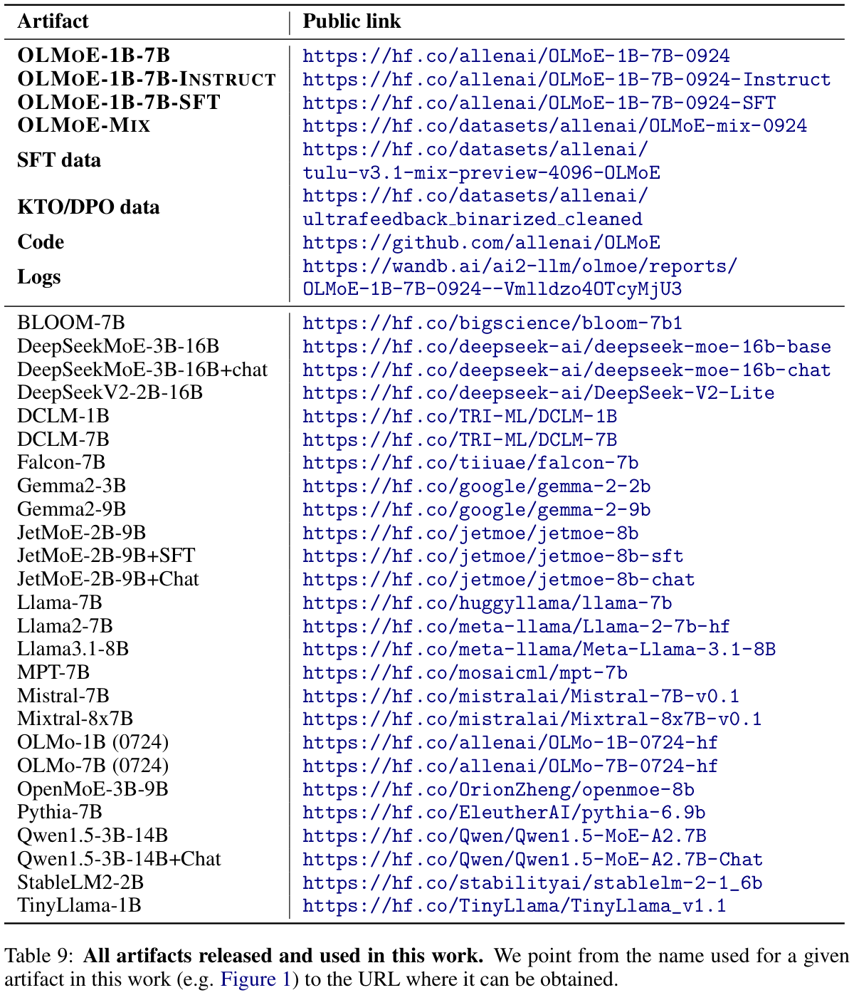
预训练。我们在附录 B 中展示 OLMOE-1B-7B 的预训练超参数配置，并与其他相关模型比较。我们遵循 Groeneveld 等人 [65]，使用 AdamW 优化器 [107]，通过 PyTorch FSDP [213] 使用 ZeRO [142]，并采用混合精度训练 [116]。
我们的主要模型设置与 Groeneveld 等人 [65] 的不同之处如下：(1) MoE 相关改动：OLMOE-1B-7B 是一个稀疏激活的仅解码器 Transformer [185]，采用不丢弃 token 的 MoE [58]。与大多数先前 MoE 不同，我们采用高粒度 [39, 86] 配置，使用 64 个小专家，每个专家的 FFN 维度仅为 1,024，而不是少数大专家。我们还使用两个辅助损失：路由器 z-loss [221] 和负载均衡损失 [154]。(2) 稳定性改进：(a) 使用标准差为 0.02、最小（最大）截断值为
（句子接下一页。）
（接上一页。）
-0.06（0.06）的截断正态初始化，对应三个标准差。(b) 使用 QK 归一化 [173, 113, 44]。(c) 使用 RMSNorm [208]，替代 Groeneveld 等人 [65] 所用的无参数 LayerNorm。(3) 性能改进：除某些同时影响性能的稳定性改进外，我们还将 AdamW epsilon 从 Groeneveld 等人 [65] 所用的 1.0E-05 降至 1.0E-08，以加快收敛。最后，我们让 OLMOE-1B-7B 的训练时长显著超过所有先前 OLMo 模型，达到 5T token，因此按照 Muennighoff 等人 [121] 的做法，训练超过一个 epoch（1.3）。在第二个 epoch 开始前，我们打乱预训练数据集。对于最后 100B token，我们将学习率从 5.0E-04 线性衰减至 0。§4 对其中许多设置进行了实验。
适配。微调使用 Open Instruct [188, 76]。8我们过滤所有 SFT 样本，将长度限制为少于 4096 token，以匹配模型的序列长度。按照 Muennighoff 等人 [122]，我们在 SFT 期间以 token 为单位聚合损失，以改善 AlpacaEval 等长文本生成任务的表现。我们使用 BF16 微调，全局 batch size 为 128（4 个 H100 节点，每节点 8 个 GPU，每设备 batch size 为 2，gradient 累积 2 步）。训练 2 个 epoch，采用 2.0E-5 的恒定学习率。对于 DPO [138]，我们将全局 batch size 降至 32（4 个 H100 节点，每节点 8 个 GPU，每设备 batch size 为 1）。训练 3 个 epoch，学习率为 5.0E-7，DPO beta 为 0.1。适配模型基于退火后的 checkpoint 构建，根据 §4.3 的实验，我们在 SFT 和 DPO 中都纳入负载均衡损失。我们的偏好微调配方基于 Ivison 等人 [76] 的大量实验，针对 DPO 做了深入优化，因此对于 KTO [54]，我们在附录 F 中尝试了若干设置。最终 KTO 适配采用与 DPO 相同的超参数，不过优化器使用 RMSProp，而非 SFT 和 DPO 所用的 Adam；同时将 KTO 的训练时长降至 1.3 个 epoch（5,000 步），而非 DPO 所用的 3 个 epoch。
译注：已核对原始 PDF。本页原文写明 SFT 和 DPO 都“纳入”负载均衡损失，与 §4.3 第 18 页“不使用负载均衡”的表述不一致，二者均按原文保留。
硬件。我们使用 256 个 H100 GPU 对 OLMOE-1B-7B 预训练约 10 天，GPU 之间通过 NV-link 互连，节点之间通过 InfiniBand 互连。所有实验也使用 H100 GPU，但部分实验在节点间采用 GCP TCPx 互连的集群上进行。适配时，我们使用 32 个 H100 GPU 进行 33 小时指令微调，再进行 14 小时 DPO 偏好微调。KTO 适配则使用 8 个 H100 GPU，耗时 30 小时。
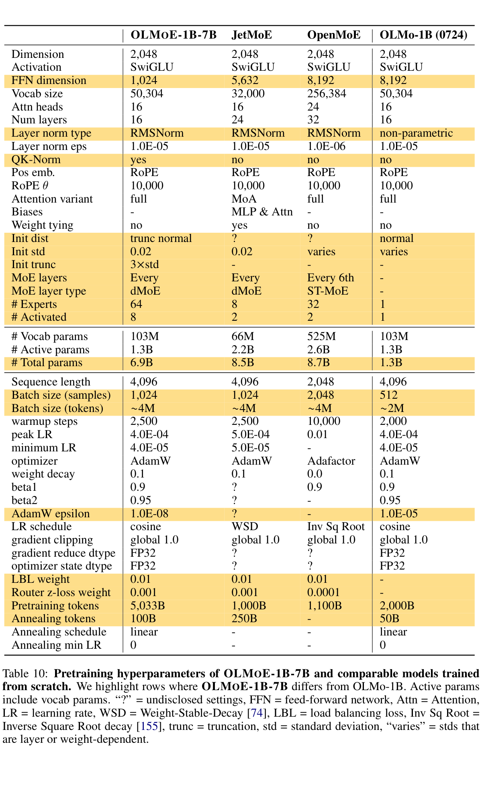
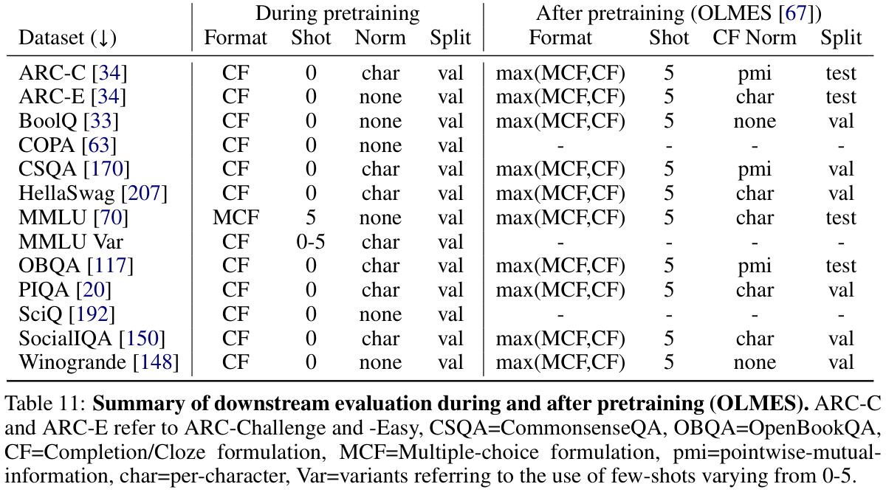
预训练期间。我们采用与 Groeneveld 等人 [65] 类似的训练循环内评测设置，另加入 CommonsenseQA、PIQA 和不同 MMLU 实现等更多任务。按照 Groeneveld 等人 [65]，对于大多数任务，我们采用补全／完形填空形式（CF）进行零样本评测，使用语言模型概率对各答案字符串排序。在概率归一化方面，要么不归一化（none），要么按答案字符数归一化（char），因为仅依据概率排序可能严重偏向较短答案 [24]。对于 MMLU，训练循环内评测还包含一种设置：合并零样本至五样本的多种设置，以增加实例总数，因为我们发现这样可以在训练推进时提供更平滑的趋势（“MMLU Var”）。我们还纳入 MMLU 的多项选择形式（MCF），对 A/B/C/D 等答案标签的预测进行评分；这种分数通常只在训练较后期才开始上升，因为模型较晚才获得多项选择能力（图 25 中，OLMOE-1B-7B 约在 1T token 时）。我们也在选定的 Paloma 验证集 [111, 144, 59, 163, 96, 115] 上评测 PPL。预训练期间评测所用的全部代码见 https://github.com/allenai/OLMo/tree/61ac104d616ec5435db225796e5c7532c9abd95a/olmo/eval。
预训练之后——OLMES。我们遵循 OLMES 评测标准 [67]，使用原论文中的任务套件进行评测。OLMES（开放语言模型评测标准）是一个开放、实用且有文档说明的可复现语言模型评测标准，其建议由实验与文献结果 [19, 60, 64] 指导。它旨在支持比较需要完形填空形式多项选择题的较小基础模型，以及能够使用多项选择形式的较大模型。为使评测可复现，我们在提示格式、上下文示例选择、概率归一化、任务形式及所有其他细节上遵循 OLMES。该设置概述于表 4，更多细节见 Gu 等人 [67]。
预训练之后——DCLM。对于表 13 中 DCLM 任务 [90] 的结果，我们使用作者在 https://github.com/mlfoundations/dclm 发布的评测代码，严格遵循其设置。“Core” 结果是评测代码中的低方差任务，“Extended” 对应计算负担较重的任务。
适配之后。在 SFT 和 DPO 之后，我们使用 Ivison 等人 [76] 所用评测的一个子集，以及相同的总体设置来评测模型，
（句子接下一页。）
（接上一页。）
以及 Wang 等人 [188] 的设置。我们的评测套件涵盖广泛模型能力，包括代码（HumanEval [28]）、一般推理与数学推理（Big Bench Hard [169]、GSM8k [35]）、世界知识（MMLU）、一般指令遵循（AlpacaEval 1.0 [93]，而非长度受控变体 [51]）、精确指令遵循（IFEval [217]）和安全性（XSTest [147]）。各基准的更多细节见 Wang 等人 [188]。
我们列出图 1 概述的各模型的开放程度。我们排除 Switch Transformers [56]，因为它发表于三年多以前，与较新的 MoE 模型差异很大（MLM 目标、编码器—解码器等）。
9 https://www.databricks.com/legal/open-model-license
10 https://www.databricks.com/legal/acceptable-use-policy-open-model
11 https://github.com/databricks/dbrx
（接上一页 DeepSeek 模型的列表。）
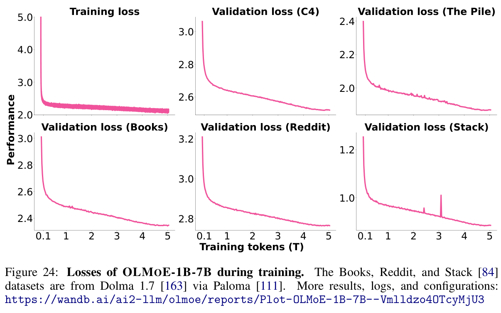
18 OpenMoE 训练代码
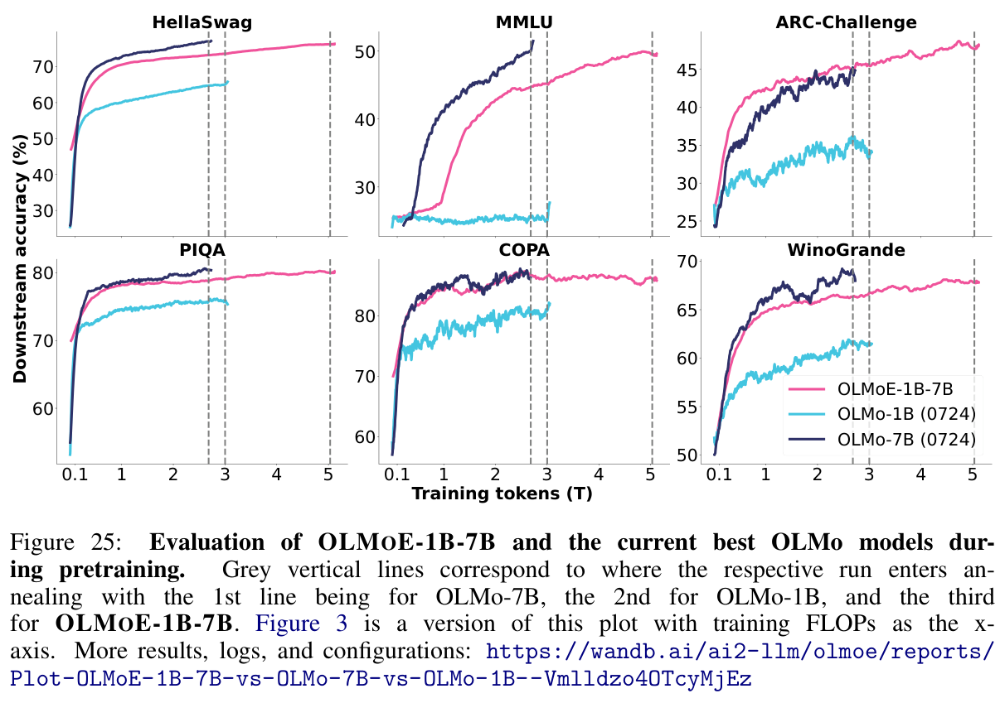
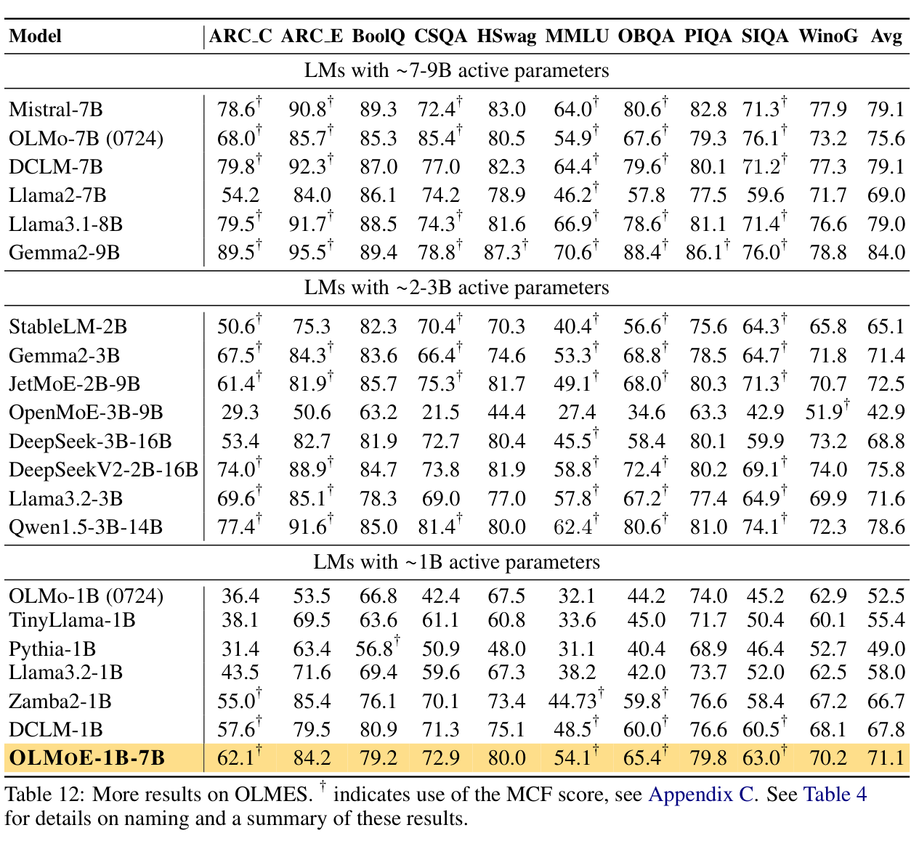
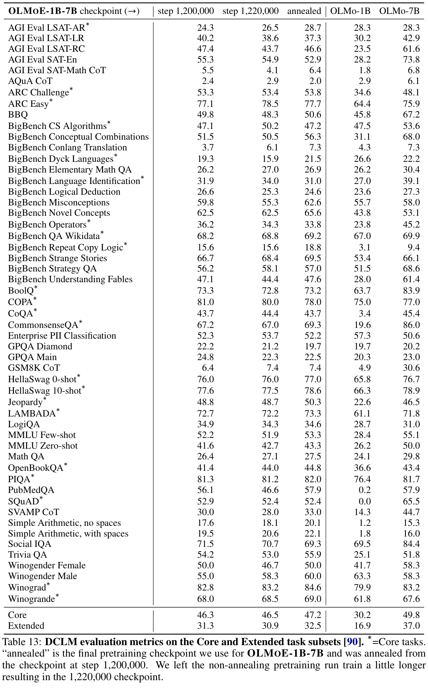
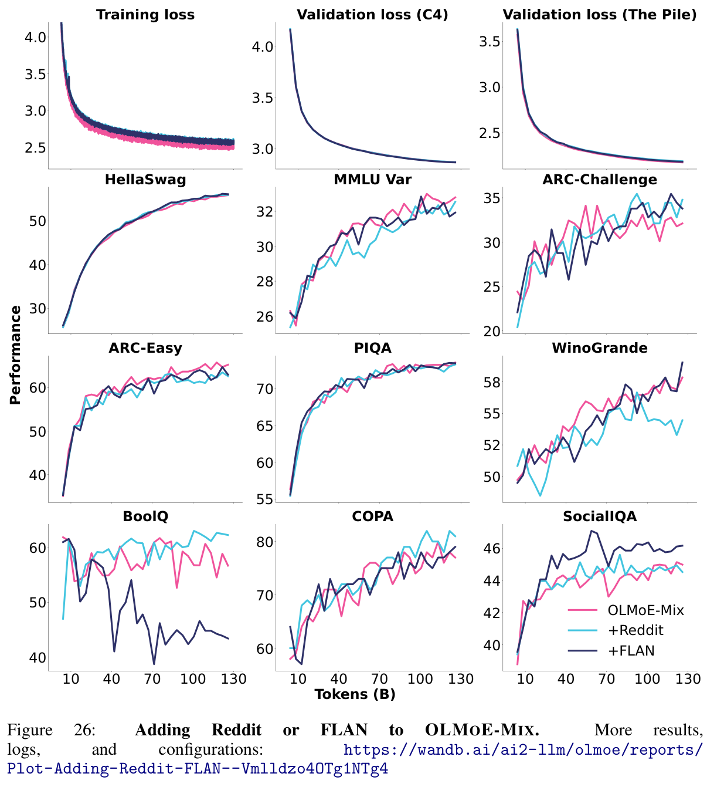
向 OLMOE-MIX 加入 Reddit 或 FLAN。在图 26 中，我们评测将 Dolma 1.7 [163] 的 Reddit 或 FLAN [190] 子集加入预训练混合数据（§2）的效果。总体而言，我们没有发现其中任何一个能带来一致的提升，因此最终混合数据不使用它们。
负载均衡精度。Fedus 等人 [56] 有选择地以全精度（FP32）执行路由相关操作，以提高稳定性。在图 27 中，我们测试以全精度计算负载均衡损失是否改善稳定性，但没有发现它减少尖峰。因此，我们保留 bfloat16（BF16）。
噪声升级再利用。为创建 Qwen2-MoE [201, 180, 13]，作者在升级再利用设置 [85] 下继续训练之前，向 FFN 加入 50% 的高斯噪声。Komatsuzaki 等人 [85] 也报告尝试加入噪声，但未发现收益。在图 28 中，我们比较常规升级再利用与加入噪声：后者随机将每个 MLP 的 50% 替换为从标准差为 0.02 的正态分布中抽取的数值，
（句子接下一页。）
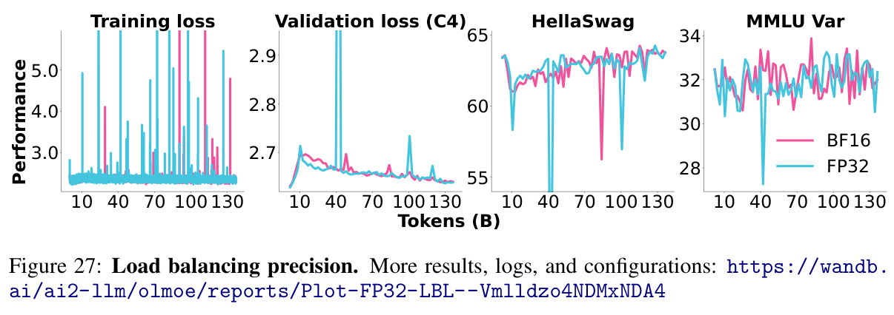
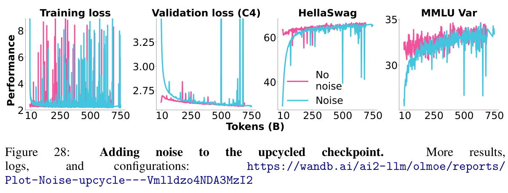
（接上一页。）
按这一做法继续。我们发现，训练 7000 亿 token 后，无噪声变体的表现仍略好，但二者似乎收敛至相同表现。如果继续训练，噪声变体可能最终超过无噪声变体，但到那时，直接从头训练 MoE 可能更合理（§4.1.5）。
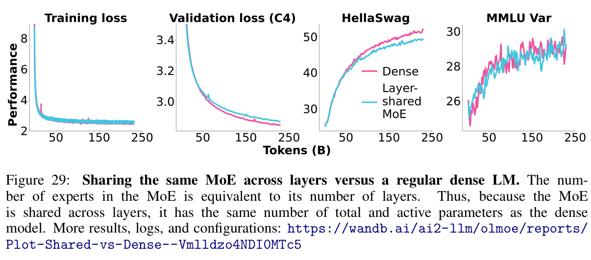
共享层。一些工作在通用 Transformer 的背景下研究了跨层共享权重的 MoE [171, 37, 45]。在图 29 中，我们测试跨层共享 MoE 能否超过不共享的稠密模型。跨层共享 MoE 使用在模型级别、而非层级别应用的负载均衡损失。这使模型更加灵活：它可以在某些层完全停用某些专家，甚至可以通过始终为每层激活一个单独的专家来模拟稠密模型。这使它成为稠密模型的推广形式，促使我们假设它可能比稠密模型表现更好。然而，在实践中，我们发现二者表现相似，普通稠密模型
（句子接下一页。）
（接上一页。）
甚至在验证损失和 HellaSwag 上保持小幅优势。跨层共享 MoE 的一个可能优势是，可以在推理时实现更好的负载均衡。如果提示持续到达，新到达的提示可以与已经通过若干层的先前提示合为一个 batch，共同经过 MoE 模块，因为无论是第一层还是最后一层，MoE 模块都相同。共享还使训练吞吐量降低约 20%，这进一步支持了我们不为 OLMOE-1B-7B 使用它的决定。
KTO 实验。在表 14 中，我们对 KTO [54] 所用步数（5,000 对比 10,000）和优化器（Adam [83] 对比 RMS）进行实验。根据这些实验，我们在 §4.3 中使用 RMS 优化器和 5,000 步时的 checkpoint。
我们指出本次 OLMOE-1B-7B 发布的四项主要局限。我们期待在未来 OLMOE 迭代中解决这些问题。
更多参数。OLMOE-1B-7B 有 7B 总参数，每个输入 token 激活其中 1B 参数。这一小规模使 OLMOE-1B-7B 的使用成本非常低，但本工作证明，它优于成本高得多的模型（图 1）。然而，每个输入 token 仅使用 1B 参数也限制了 OLMOE-1B-7B 的能力，正如 §3 中与 Llama3.1-8B 等参数使用量超过其 7 倍的模型比较所示。虽然可能无需更多参数就能匹配 8B 及更大模型 [81]，但在短期内，增加参数是改善 OLMOE 表现的简单方法，至少可以让模型每个输入使用超过 1B 参数，可能通过递归 [45] 或 agent 工作流 [187, 202] 实现。相关地，改变参数在词表参数与非词表参数等部分之间的分配，是另一条改进途径 [172]。
更多数据。我们让 OLMOE-1B-7B 训练 5 万亿 token，但一些较新的稠密模型训练时长显著更长，例如 Llama 3 训练 15 万亿 token [50]。据我们所知，没有大型 MoE 像 OLMOE-1B-7B 这样被过度训练 [57]。具体来说，以 OLMOE-1B-7B 的激活参数计算，我们的 token 倍数 [57] 约为 5,000（5T / 1B）。更长训练很可能有益，但过度训练对 MoE 的有效程度，以及它与稠密模型有何不同，仍需更多研究 [7]。
多模态。OLMOE-1B-7B 是纯文本 LLM，因此无法接收或生成图像、音频等其他模态。这限制了其在此类模型众多多模态使用场景中的效用 [75, 167, 27, 82, 119, 136, 14, 47, 50]。开放多模态 MoE 已有早期工作 [125, 98, 95, 157, 112, 194]，我们期待未来 OLMOE 版本参与其中。
多语言。我们在主要为英语的语料上预训练 OLMOE-1B-7B，并且只在英语任务上评测。这可能严重限制模型对非英语语言模型研究的实用性 [108, 160, 223, 53, 165, 197]。虽然已有训练特定语言模型的工作 [110, 55]，但更可能的是，在增加数据以构建更好的未来 OLMOE 迭代时，由于数据约束 [121]，我们会混入更多非英语数据。这可能改善未来 OLMOE 模型在非英语语言上的表现。
我们于 2024 年 9 月推出 OLMOE-1B-7B。2025 年 1 月，我们发布更好的模型 OLMOE-1B-7B-0125，在此讨论。
预训练方面，OLMOE-1B-7B-0125 在训练第一阶段使用相同的数据混合。按照 OLMo 2 [127]，我们在精选的高质量来源混合数据上对新模型退火。我们从 DOLMINO 数据集19中采样这一混合数据，该数据集包含高质量网页、学术内容、问答对、指令数据与数学问题。我们使用与 OLMo 2 13B 退火相同的 100B token DOLMINO 样本；数据集概述见表 15。
我们在表 16 中比较 OLMOE-1B-7B-0125 和 OLMOE-1B-7B。总体而言，新模型相比上一迭代有明显改进，平均表现更好（+1.6），在 MMLU 等重要数据集上也更好（+2.1）。
在这一改进的退火设置之后，我们使用 Tülu 3 [87] 的后训练对 OLMOE-1B-7B-0125 进行适配。该配方是 OLMOE 原先所用配方的更新版本，包含改进的 SFT 混合数据、更好采样的 DPO 数据，以及利用验证器作为模型奖励的 PPO 步骤。我们在表 17 中使用 Tülu 的评测设置（与本论文其他评测不同）比较新迭代。适配之后，新模型明显更好，基准平均分提高 10 分。
新模型与数据集可在 Hugging Face hub 上免费获取。20关于此次发布的更多信息，见 Ai2 网站上的公告。21
V1 → V2（2025-03）：
译注：修改日志中的 4.0E-05 按原文保留；表 10 的 peak LR 实际列为 4.0E-04，minimum LR 列为 4.0E-05。
20 hf.co/collections/allenai/olmoe-january-2025-67992134f9ebea0a941706ca